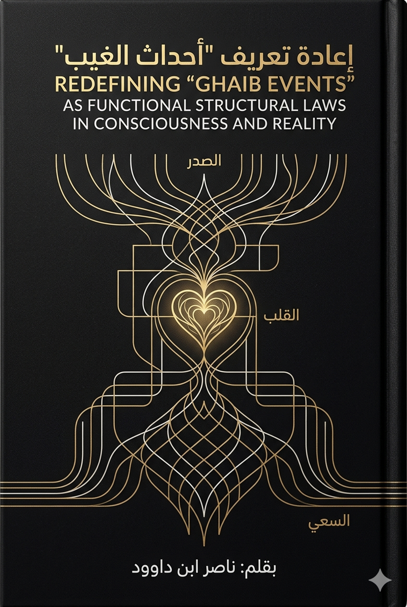
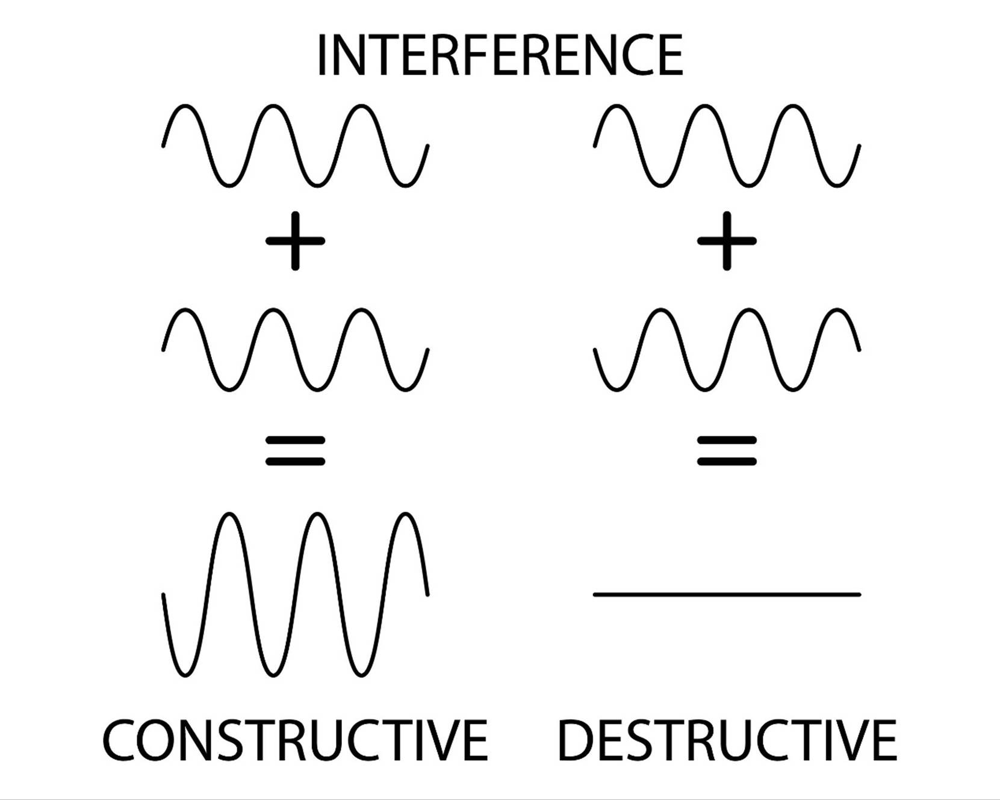

مخطط المشروع
تنزيل
(ماء السماء / القرآن)
↓
استقبال (القلب)
↓
تفاعل (الصدر)
↓
تشويش (الشيطان)
↓
اختبار (الابتلاء)
↓
اختيار (الإرادة)
↓
حركة (السعي)
↓
نتيجة (الميزان /
الآخرة)
↓
حالة (نور أو ظلمة)
↓
مآل (حياة أو موت)
من
تفكيك المفهوم إلى تشغيله
تمهيد
تأسيسي: موضع الخلل في القراءة المعاصرة
الإشكالية
المركزية التي يستجيب لها هذا الفصل ليست في نقص النص، بل في اختلال آلية
القراءة.
فالوعي الديني المعاصر
يتعامل مع القرآن عبر ثلاث طبقات مختزلة:
وفي
كل هذه الحالات، يتم تعطيل بعده الأهم:
كونه
نظامًا دلاليًا مُشغِّلًا للوعي والواقع
هذا
الاختلال يمكن تمثيله في المخطط التالي:
اختزال
المفهوم
↓
تجزئة الدلالة
↓
انفصال النص عن الواقع
↓
تعطل الفاعلية السننية
↓
تحول الدين إلى طقوس بلا
أثر
ومن
هنا تأتي ضرورة بناء قواعد منهجية تعيد ضبط العلاقة بين:
النص
← المفهوم ← الوعي ← الفعل ← الواقع
أولاً:
ما هو "المفهوم" في اللسان القرآني؟
1.
التعريف الشائع
يُتعامل
مع المفهوم غالبًا باعتباره:
كلمة
ذات معنى معجمي أو اصطلاحي
2.
موطن الخلل
هذا
التعريف يؤدي إلى:
3.
التحليل البنيوي
في
اللسان القرآني، المفهوم ليس وحدة معجمية، بل:
عقدة
داخل شبكة دلالية، تؤدي وظيفة محددة ضمن نظام كلي
فكل
مفهوم:
4.
التعريف التأصيلي المقترح
المفهوم
القرآني هو:
بنية
دلالية وظيفية، تتحدد من خلال علاقاتها الداخلية، وتُشتغل ضمن نظام سنني لإنتاج
أثر في الوعي والواقع
5.
الأثر المنهجي
بهذا
التحول:
ثانياً:
مستويات الدلالة في القراءة البنيوية
من
أخطر مواطن الخلل هو الخلط بين مستويات المعنى.
ولهذا يجب التفريق بين
أربع طبقات:
1.
الدلالة اللغوية
هي
المعنى الأصلي للجذر (مثلاً: ق-و-م = القيام، الاستقامة)
2.
الدلالة السياقية
كيف
استُخدم المفهوم داخل الآية والسياق
3. الدلالة
البنيوية
موقع
المفهوم داخل شبكة المفاهيم القرآنية
4.
الدلالة التشغيلية
وظيفته
في إنتاج أثر (في النفس أو الواقع)
جدول
تفكيكي
|
المستوى |
التعريف |
الخطر عند إهماله |
|
اللغوي |
أصل
المعنى |
الانفصال
عن الجذر |
|
السياقي |
معنى
الاستعمال |
إسقاط
المعاني |
|
البنيوي |
شبكة
العلاقات |
التجزئة |
|
التشغيلي |
الوظيفة |
تعطيل
الفاعلية |
ثالثاً:
قانون "الشبكة المفاهيمية"
الإشكالية
يُقرأ
القرآن غالبًا بطريقة تجزيئية:
القاعدة
لا
يُفهم أي مفهوم قرآني إلا داخل شبكة علاقاته
مثال
بنيوي (جذر ق-و-م)
قيام
↔ استقامة
↔ قيمة
↔ قِوام
↔ قيامة
هذه
ليست اشتقاقات لغوية فقط، بل:
نظام
دلالي يعكس حركة: من التوازن إلى الانهيار ثم إعادة التقويم
الأثر
المنهجي
عند
قراءة أي مفهوم يجب:
أ-
تحديد جذره
ب-
جمع اشتقاقاته
ت-
بناء خريطته
ث-
تحليل علاقاته
رابعاً:
قاعدة "التحول من الحدث إلى القانون"
الإشكالية
يتم
التعامل مع المفاهيم باعتبارها:
أحداثًا
زمنية (كالقيامة، الزلزلة، الصاخة…)
القاعدة
كل
حدث قرآني يحمل بنية قانونية قابلة للتكرار
التحليل
البنيوي
الحدث
= تجلٍّ لقانون
وليس العكس
مثال:
الزلزلة
ليست فقط حدثًا كونيًا
بل:
قانون
اهتزاز البنية عند فقدان التوازن
مخطط
التحول
حدث
↓
بنية
↓
قانون
↓
سُنّة
↓
تطبيق
الأثر
بهذا
التحول:
خامساً:
قاعدة "السننية"
التعريف
الشائع
السنن
= قوانين عامة
إعادة
التعريف
السننية هي: انتظام العلاقة بين البنية والنتيجة
أي:
اختلال
→ نتيجة حتمية
اتزان
→ نتيجة مقابلة
مثال
فساد
↓
اختلال ميزان
↓
زلزلة
↓
إعادة ضبط
الأثر
سادساً:
التمييز بين "التفسير" و"التفعيل"
الإشكالية
الخلط
بين:
التفسير
بيان
ماذا يعني النص
التفعيل
كيف
يعمل النص داخل الواقع
جدول
الفرق
|
البعد |
التفسير |
التفعيل |
|
الهدف |
الفهم |
التشغيل |
|
المجال |
ذهني |
وجودي |
|
النتيجة |
معرفة |
تحول |
الأثر
هذا
التفريق يمنع:
سابعاً:
ضوابط التأويل البنيوي
هنا
أهم نقطة لحماية المشروع.
الضابط
الأول: الارتكاز الجذري
أي
معنى يجب أن يعود إلى الجذر اللغوي
الضابط
الثاني: الشمول الاستعمالي
يجب
تتبع جميع مواضع المفهوم في القرآن
الضابط
الثالث: الاتساق الشبكي
لا
يجوز أن يتناقض مع شبكة المفاهيم
الضابط
الرابع: القابلية التشغيلية
يجب
أن ينتج أثرًا واقعيًا
مخطط
الانحراف
تأويل
غير مضبوط
↓
تفكك المفهوم
↓
تشوش المنهج
↓
فقدان المصداقية
ثامناً:
منهجية قراءة المفهوم (الخوارزمية)
عند
التعامل مع أي مفهوم قرآني:
أ-
استخراج الجذر
ب-
تحليل المعنى اللغوي
ت-
جمع الاستعمالات القرآنية
ث-
تحليل السياقات
ج-
بناء الشبكة المفاهيمية
ح-
استخراج القانون البنيوي
خ-
تحديد الوظيفة
د-
اختبار التطبيق
مخطط
تشغيلي
لفظ
↓
جذر
↓
دلالة
↓
شبكة
↓
قانون
↓
وظيفة
↓
أثر
تاسعاً:
إعادة تعريف المنهج
بناءً
على ما سبق، يمكن تعريف هذا المنهج بأنه:
منهج
بنيوي سنني، يقرأ اللسان القرآني باعتباره نظامًا دلاليًا متكاملًا، ويعيد بناء
المفاهيم بوصفها قوانين تشغيلية تنتج أثرًا في الوعي والواقع
عاشراً:
التحول المنهجي النهائي
هذا
الفصل لا يهدف إلى شرح طريقة قراءة فقط، بل إلى إحداث تحول جذري:
3 بل
نص
→ فهم
→ وعظ
بعد
نص
→ شبكة مفاهيم
→ قوانين
→ تشغيل
→ تغيير الواقع
خاتمة
الفصل: نحو علم تشغيل القرآن
بهذه
القواعد، لا يعود القرآن:
بل
يصبح:
نظامًا
يُشغَّل
وهنا
ينتقل المشروع من:
التفسير
إلى
الهندسة
ومن:
البيان
إلى
البناء
ومن:
الفهم
إلى
التحول
من الحدث الزمني إلى البنية السننية
في اللسان القرآني
الإشكالية المركزية
يتأسس
الخلل المعاصر في فهم "أيام الله" على اختزالها في وقائع زمنية ماضية
أو أحداث أخروية مؤجلة، مما أدى إلى تعطيل فاعليتها بوصفها قوانين حاكمة
لحركة الوعي والتاريخ. هذا الاختزال لم يكن مجرد خطأ في التفسير، بل انبنى عليه اضطراب أعمق:
اختزال
اليوم في الزمن
↓
تعطيل البعد السنني للنص
↓
فصل القرآن عن الواقع
↓
تحول الدين إلى انتظار
↓
تجميد الفعل الحضاري
ومن
هنا تنشأ ضرورة إعادة تحرير مفهوم "اليوم" ضمن شبكة اللسان القرآني، لا
باعتباره وحدة زمنية، بل باعتباره وحدة تحقق سنني يظهر فيها أثر القانون
الإلهي في الوجود.
أولاً: تفكيك مفهوم "اليوم" في اللسان
القرآني
1.
التعريف الشائع
اليوم
هو:
2.
مناطق الالتباس
3.
التحليل اللساني البنيوي
في
بنية اللسان، "اليوم" لا يُعرّف بذاته، بل بوظيفته؛ أي بما يظهر فيه.
فهو وعاء لظهور:
4.
التعريف التأصيلي المقترح
"اليوم" هو وحدة تحقق يظهر فيها
أثر قانون إلهي محدد على مستوى النفس أو الجماعة أو التاريخ.
5.
الأثر المنهجي
ثانياً:
"أيام الله" بوصفها نظاماً سننياً
1.
التعريف الشائع
"أيام الله" هي:
2.
مناطق الالتباس
3.
التحليل البنيوي
"أيام الله" ليست أحداثاً معزولة،
بل نقاط تجلٍّ لسنن ثابتة، حيث:
4.
التعريف التأصيلي
"أيام الله" هي لحظات تكثّف سنني
يظهر فيها القانون الإلهي في صورته المكشوفة، بحيث تتحول من غيب كامن إلى واقع
مشهود.
5.
الأثر
ثالثاً:
إعادة بناء مفهوم "يوم القيمة"
1.
مدخل الإشكال
وقع
الخلط بين "القيامة" بوصفها حدثاً، و"القيمة" بوصفها معياراً،
مما أدى إلى:
أ-
إرجاء الميزان إلى المستقبل
ب-
وتعطيل حضوره في الواقع
ت-
مناطق الالتباس
2.
التحليل اللساني (ق-و-م)
الجذر
يدل على:
وهذه
ليست معاني منفصلة، بل شبكة دلالية واحدة.
3.
إعادة التعريف التأصيلي
القيامة:
فعل انبعاث وقيام من حالة سكون أو انحراف
القيمة: معيار هذا
القيام وميزانه
4.
التعريف المركب
"يوم القيمة" هو لحظة استقامة
الميزان وظهور القيمة الحقيقية للأشياء بعد زوال التشوهات التي كانت تحجبها.
5.
الأثر المنهجي
رابعاً:
تسلسل "أيام الله" كبنية تحول
عند
إعادة قراءة المصطلحات القرآنية، يظهر أنها ليست أسماء متفرقة، بل بنية تحول
متكاملة:
البنية
السننية:
الاختلال
↓
الزلزلة (تفكيك البنية)
↓
القارعة (إخلاء البنية)
↓
الصاخة (كشف الحقيقة)
↓
الحاقة (تثبيت الحق)
↓
يوم القيمة (استقرار
الميزان)
الدلالة:
هذه
ليست أحداثاً منفصلة، بل مراحل في:
خامساً:
إسقاطات "أيام الله" على الواقع
1.
يوم الفصل
ليس
مجرد حدث أخروي، بل:
لحظة
انكشاف التمايز بين مسارين داخل الواقع نفسه.
2.
يوم الحشر
ليس
فقط جمع الأجساد، بل:
جمع
النتائج والمعطيات بحيث لا يعود شيء مخفياً.
3.
يوم الدين
ليس
مؤجلاً فقط، بل:
خضوع
كل فعل لنتيجته وفق قانون الاستحقاق.
|
المفهوم |
المعنى اللغوي |
المعنى التراثي |
المعنى التداولي |
التعريف التأصيلي |
|
اليوم |
زمن |
ظرف
أخروي |
يوم
عادي |
وحدة
تحقق سنني |
|
أيام
الله |
وقائع |
أحداث
تاريخية |
قصص |
تجليات
القانون |
|
القيامة |
قيام |
نهاية
العالم |
حدث
مرعب |
انبعاث
الوعي |
|
القيمة |
معيار |
غير
مفعّل |
أخلاق |
ميزان
الاستقامة |
سادساً:
الأثر الحضاري لإعادة التعريف
عند
إعادة بناء هذه المفاهيم، يحدث تحول جذري:
تعطيل
السنن
↓
تفعيل القراءة
↓
إدراك القوانين
↓
تحرير الوعي
↓
إصلاح الفعل
الخاتمة: نحو منهج تشغيل "أيام الله"
إنّ
إعادة تعريف "أيام الله" و"يوم القيمة" لا تهدف إلى إنتاج
تأويل جديد، بل إلى تأسيس منهج إدراك يعيد وصل الإنسان بالقانون الإلهي في
حركته اليومية.
فالقرآن
لا يقدّم:
ولا
يحدّث عن:
وعليه،
فإن التحول المنهجي المطلوب هو:
من
انتظار اليوم
إلى إدراكه
ومن إدراكه
إلى الانخراط فيه
ومن الانخراط فيه
إلى إعادة تشكيل الواقع
على أساسه
وبذلك
يصبح "يوم القيمة" ليس نهاية، بل بداية دائمة لقيام الإنسان بالحق في كل
آن.
من الحدث المؤجل إلى بنية القيام في الوعي
والوجود
الإشكالية المركزية
تشكل
"القيامة" أحد أكثر المفاهيم تعرضاً للاختزال في الوعي الديني المعاصر،
حيث حُصرت في حدث كوني مستقبلي يقع عند نهاية العالم، مما أدى إلى تعطيل
بعدها الوظيفي بوصفها قانوناً حاكماً لحركة الوعي الإنساني.
هذا
الاختزال أنتج سلسلة من الاضطرابات المعرفية:
حصر
القيامة في المستقبل
↓
تعطيل فاعليتها في
الحاضر
↓
فصل الوعي عن المحاسبة
المستمرة
↓
تحويل الدين إلى انتظار
↓
انفصال السلوك عن
الميزان
ومن
هنا تنشأ ضرورة إعادة بناء مفهوم "القيامة" ضمن اللسان القرآني
باعتبارها بنية قيام لا مجرد واقعة زمنية.
أولاً: تفكيك المفهوم الشائع للقيامة
1.
التعريف الشائع
القيامة
هي:
2.
مناطق الالتباس
ثانياً: التحليل اللساني البنيوي (ق-و-م)
الجذر
(ق-و-م) في اللسان القرآني يشكل شبكة دلالية مترابطة:
النتيجة
البنيوية:
القيامة
ليست مفهوماً معزولاً، بل هي جزء من منظومة:
القيام
(حركة)
↓
الاستقامة (اتزان)
↓
القيمة (معيار)
ثالثاً: إعادة تعريف "القيامة"
التعريف
التأصيلي
"القيامة" هي انتقال الكيان
الإنساني من حالة السكون أو الانحراف إلى حالة القيام وفق مقتضى الحق.
التعريف
الوظيفي
هي
لحظة انكشاف الحقيقة بحيث لا يعود الباطل قادراً على الاستمرار داخل البنية
النفسية أو الواقعية.
رابعاً: القيامة كبنية مستمرة لا كحدث منفصل
القيامة
في اللسان القرآني تعمل على مستويين متداخلين:
1.
القيامة الجزئية (الحاضرة)
2.
القيامة الكلية (النهائية)
العلاقة
بينهما:
القيامة
الكبرى ليست انقطاعاً، بل اكتمال لمسار قائم بالفعل.
خامساً: "النفس اللوامة" كآلية تشغيل
القيامة
التعريف
الشائع
مناطق
الالتباس
التحليل
البنيوي
"اللوم" في بنيته ليس مجرد تأنيب،
بل:
عملية
تصحيح مستمر تعيد ضبط الانحراف عن القيمة
التعريف
التأصيلي
"النفس اللوامة" هي آلية القياس
الداخلية التي تفعّل عملية القيامة عبر كشف الخلل وإجبار الوعي على مراجعته.
موقعها
في البنية:
الانحراف
↓
تنبيه (لوم)
↓
تفكيك الخلل
↓
قيام جديد
سادساً: "تسوية البنان" – إعادة بناء
الهوية الدقيقة
التعريف
الشائع
إعادة
خلق أطراف الأصابع يوم القيامة
مناطق
الالتباس
التحليل
البنيوي
"البنان" يمثل:
التعريف
التأصيلي
"تسوية البنان" هي إعادة ضبط أدق
تفاصيل البنية الإنسانية لتتوافق مع نظام الحق بعد تفكيك الانحراف.
الدلالة:
القيامة
لا تعيد بناء الكليات فقط، بل:
سابعاً: مشاهد القيامة كتحولات إدراكية
1.
"خسف القمر"
التحليل:
القمر يعكس الضوء → يمكن
ان يمثل الإدراك المكتسب
الدلالة
التأصيلية:
انهيار
الاعتماد المطلق على المعرفة المنعكسة عندما يتجلى النور المباشر
2.
"جمع الشمس والقمر"
التحليل:
التعريف
التأصيلي:
يمكن
تفسيره كتوحيد مصدر الإدراك وأداته في حالة انسجام معرفي كامل
3.
"بل الإنسان على نفسه بصيرة"
الدلالة:
انتقال
مركز الحكم من الخارج إلى الداخل بعد اكتمال انكشاف الحقيقة
ثامناً: منهجية التلقي في سياق القيامة
الإشكال
الاستعجال
في الفهم يؤدي إلى:
التحليل
البنيوي للآيات:
(لا تحرك به لسانك لتعجل به)
(إن علينا جمعه وقرآنه)
(ثم إن علينا بيانه)
التسلسل
المنهجي:
التلقي
↓
الجمع (بناء الشبكة)
↓
القراءة (الفهم)
↓
البيان (الكشف)
النتيجة:
القيامة
المعرفية لا تتحقق بالسرعة، بل بالبناء التراكمي.
تاسعاً: القيامة كقانون حضاري
عند
إسقاط المفهوم على الواقع:
1.
انهيار البنى المغلقة
كل
منظومة غير متوافقة مع الحق:
2.
انكشاف القيم
3.
فرز الوعي
ينقسم
الناس إلى:
|
المفهوم |
المعنى اللغوي |
المعنى التراثي |
المعنى التداولي |
التعريف التأصيلي |
|
القيامة |
القيام |
نهاية
العالم |
حدث
مرعب |
انبعاث
وفق الحق |
|
النفس
اللوامة |
اللوم |
الندم |
تأنيب |
آلية
تصحيح |
|
البنان |
الأطراف |
دليل
قدرة |
إعجاز |
دقة
الهوية |
|
القمر |
انعكاس |
جرم |
ضوء |
معرفة
مكتسبة |
|
الشمس |
مصدر |
جرم |
حرارة |
بصيرة |
عاشراً: التحول المنهجي
إعادة
بناء مفهوم القيامة ينتج تحوّلاً جذرياً:
من
قيامة مؤجلة
↓
إلى قيامة مستمرة
↓
إلى وعي مراقِب
↓
إلى سلوك منضبط
↓
إلى إنسان قائم
الخاتمة: القيامة كفعل وجودي دائم
القيامة
ليست لحظة تنتظرها، بل حالة تدخلها.
وليست حدثاً يقع عليك،
بل نظاماً تقوم به أو تقوم عليك سننه.
إنها
انتقال دائم:
وعليه،
فإن الإنسان لا ينتظر القيامة، بل:
إما
أن يكون في حالة قيام
أو في حالة سقوط
وبقدر
ما يستجيب لنداء "النفس اللوامة"،
بقدر ما تتشكل قيامته
الخاصة،
تمهيداً لقيامته الكبرى
حيث يستقر الميزان على صورته النهائية.
من توهّم الترادف إلى كشف البنية الوظيفية
لتحولات الوعي والواقع
الإشكالية المركزية
تُقدَّم
مفاهيم: القارعة،
الصاخة، الحاقة في
القراءة الشائعة بوصفها ألفاظاً متقاربة تشير إلى "أهوال يوم القيامة"،
مما أدى إلى تعطيل دقتها البنيوية، وإفقادها وظيفتها داخل النسق القرآني.
هذا
الاختزال أنتج خللاً معرفياً مركباً:
افتراض
الترادف
↓
إلغاء الفروق الدلالية
↓
تعطيل البنية التحليلية
للنص
↓
تحويل المفاهيم إلى صور
تخويفية
↓
فقدان وظيفتها في فهم
الواقع
ومن
هنا تنشأ ضرورة إعادة قراءة هذه الثلاثية باعتبارها نظاماً تحويلياً متدرجاً،
لا ألفاظاً متكررة.
أولاً: من الترادف إلى البنية
1.
التعريف الشائع
2.
مناطق الالتباس
3.
الفرضية التأصيلية
هذه
المفاهيم ليست مترادفات، بل تمثل مراحل متتابعة في تفكيك الباطل وإثبات الحق، على
مستوى النفس والتاريخ.
ثانياً: القارعة – بنية الطَّرق والإخلاء
1.
التحليل اللساني (ق-ر-ع)
يدل
الجذر على:
2.
التعريف الشائع
حدث
مفزع يقرع القلوب
3.
مناطق الالتباس
4.
التعريف التأصيلي
القارعة
هي فعل إدخال قسري يخلخل البنية القائمة ويفرغها من مكوناتها غير الأصيلة.
5.
الوظيفة البنيوية
6.
موضعها في النسق
بداية
التحول، حيث:
ثالثاً: الصاخة – بنية الكشف والفرز
1.
التحليل اللساني (ص-خ-خ)
يدل
على:
2.
التعريف الشائع
صيحة
تصمّ الآذان
3. مناطق الالتباس
3.
التعريف التأصيلي
الصاخة
هي لحظة انكشاف الحقيقة بدرجة من الوضوح تجعل الباطل غير قابل للاستمرار إدراكياً.
4.
الوظيفة البنيوية
5.
دلالتها في النص
(يفر المرء من أخيه...)
ليست هروباً جسدياً، بل:
تفكك
الروابط المبنية على غير الحق
رابعاً: الحاقة – بنية التثبيت والاستحقاق
1.
التحليل اللساني (ح-ق-ق)
يدل
على:
2.
التعريف الشائع
يوم
الحق
3.
مناطق الالتباس
4.
التعريف التأصيلي
الحاقة
هي لحظة تثبّت الحق كواقع نهائي، بحيث يصبح هو النظام الحاكم الذي لا يقبل النقض.
5.
الوظيفة البنيوية
عند
جمع المفاهيم ضمن نسق واحد، تظهر كبنية تحول:
القارعة
(تفكيك)
↓
الصاخة (كشف)
↓
الحاقة (تثبيت)
المعنى:
سادساً: اشتغال الثلاثية في النفس
1.
القارعة النفسية
2.
الصاخة الإدراكية
3.
الحاقة الوجودية
سابعاً: اشتغال الثلاثية في الحضارة
1.
القارعة الحضارية
2.
الصاخة التاريخية
3.
الحاقة السننية
ثامناً: العلاقة مع "يوم القيمة"
تكتمل
هذه الثلاثية في "يوم القيمة":
تفكيك
(القارعة)
↓
كشف (الصاخة)
↓
تثبيت (الحاقة)
↓
استقامة الميزان
(القيمة)
النتيجة:
"يوم القيمة" ليس حدثاً مستقلاً،
بل:
نتيجة
نهائية لمسار تحولي تقوده هذه الثلاثية
جدول تحليلي
|
المفهوم |
الجذر |
المعنى اللغوي |
المعنى الشائع |
التعريف التأصيلي |
الوظيفة |
|
القارعة |
ق-ر-ع |
طرق/إخلاء |
حدث
مفزع |
تفكيك
البنية |
إدخال
الصدمة |
|
الصاخة |
ص-خ-خ |
صوت
نافذ |
صيحة |
كشف
الحقيقة |
فرز
الإدراك |
|
الحاقة |
ح-ق-ق |
ثبوت |
يوم
الحق |
تثبيت
الواقع |
إقرار
النظام |
تاسعاً: أثر إعادة التعريف على المنهج
قبل:
بعد:
عاشراً: التحول المنهجي
إعادة
بناء هذه الثلاثية يغيّر طريقة قراءة النص:
من
ألفاظ متكررة
↓
إلى نظام تحولي
↓
إلى أدوات تحليل الواقع
↓
إلى وعي سنني
الخاتمة: من الصدمة إلى السيادة
تكشف
ثلاثية القارعة والصاخة والحاقة أن التحول في اللسان القرآني لا يحدث دفعة واحدة،
بل يمر بمراحل:
وهذا
المسار لا يخص الآخرة فقط، بل هو قانون يعمل في:
وعليه،
فإن من لم يفهم القارعة حين تقع،
لن يدرك الصاخة حين
تنكشف،
ومن لم يدرك الصاخة،
سيفاجأ بالحاقة حين
تُحسم الأمور دون رجعة.
وبذلك
تتحول هذه المفاهيم من مشاهد مرعبة في المستقبل،
إلى أدوات وعي تمكّن
الإنسان من فهم التحولات قبل أن تسحقه نتائجها.
من تأجيل الجزاء إلى تفعيل قانون المآلات في اللسان القرآني
الإشكالية المركزية
نشأ
في الوعي الديني السائد فصلٌ حاد بين الدنيا والآخرة، حيث حُصرت
الآخرة في أفقٍ غيبيّ مؤجَّل، وأُخرجت من مجال الفعل الإنساني المباشر. ونتج عن
ذلك تعطيل أحد أهم القوانين القرآنية: قانون المآلات
(النتائج).
هذا
الخلل البنيوي يمكن تمثيله كالتالي:
حصر
الآخرة في المستقبل
↓
تعطيل حضور الجزاء في
الحاضر
↓
انفصال السلوك عن نتائجه
↓
تأجيل المحاسبة
↓
اضطراب الميزان
ومن
هنا تبرز الحاجة إلى إعادة بناء مفهومي الميزان والآخرة ضمن نسق
اللسان القرآني، بوصفهما نظاماً حاكماً لحركة الفعل الإنساني في الدنيا قبل الآخرة.
أولاً: تفكيك مفهوم "الآخرة"
1.
التعريف الشائع
الآخرة
هي:
2.
مناطق الالتباس
ثانياً: التحليل اللساني (أ-خ-ر)
الجذر
يدل على:
النتيجة:
الآخرة
في بنيتها اللسانية ليست "مكاناً" فقط، بل:
ما
يترتب على الشيء ويعقبه
ثالثاً: التعريف التأصيلي للآخرة
"الآخرة" هي المآل الحتمي الذي
ينتج عن الفعل وفق قانون إلهي دقيق، سواء تجلّى ذلك في الدنيا أو اكتمل في الغيب.
رابعاً: الآخرة كبنية مزدوجة
لفهم
دقيق، يجب التمييز بين مستويين:
1.
الآخرة الدنيوية (المباشرة)
2.
الآخرة الغيبية (النهائية)
العلاقة
بينهما:
فعل
↓
مآل جزئي (دنيوي)
↓
تراكم
↓
مآل كلي (أخروي)
خامساً: مفهوم "الميزان" كقانون حاكم
1.
التعريف الشائع
ميزان توزن به الأعمال يوم القيامة
2.
مناطق الالتباس
3.
التحليل البنيوي
الميزان
في اللسان القرآني هو:
4.
التعريف التأصيلي
"الميزان" هو النظام الذي يضبط
العلاقة بين الفعل ونتيجته وفق معايير الحق والعدل.
سادساً: العلاقة بين الميزان والآخرة
الميزان
هو:
أداة القياس
والآخرة هي:
نتيجة القياس
البنية:
فعل
↓
قياس (ميزان)
↓
نتيجة (آخرة)
سابعاً: قانون "الجزاء من جنس العمل"
هذا
القانون يمثل العمود الفقري للميزان.
التعريف:
كل
فعل يحمل في بنيته نتيجة من جنسه، تظهر وفق نظام دقيق لا يختل.
أمثلة
بنيوية:
الدلالة:
الجزاء
ليس قراراً اعتباطياً، بل:
نتيجة
هندسية للفعل نفسه
ثامناً: مفهوم "السعي" وهندسة المآل
التعريف
الشائع
العمل
أو الجهد
مناطق
الالتباس
التحليل
البنيوي
السعي
هو:
التعريف
التأصيلي
"السعي" هو توجيه واعٍ للحركة وفق
تصور قيمي، ينتج عنه مآل مطابق لبنيته.
تاسعاً: المسؤولية الفردية
الإشكال
الوعي
الجمعي يميل إلى:
التأصيل
القرآني
كل
إنسان مسؤول عن مآله بقدر سعيه
البنية:
إدراك
↓
اختيار
↓
سعي
↓
مآل
عاشراً: التقوى كآلية حماية الميزان
التعريف
الشائع
الخوف
من الله
مناطق
الالتباس
التحليل
البنيوي
التقوى
من (وقى):
التعريف
التأصيلي
"التقوى" هي آلية وقائية تحافظ
على توازن الميزان عبر ضبط السلوك وفق معايير الحق.
حادي عشر: الإحسان كأعلى تفعيل للميزان
التعريف
الشائع
فعل
الخير
التحليل
البنيوي
الإحسان
هو:
التعريف
التأصيلي
"الإحسان" هو تحقيق أعلى درجات
الانسجام بين الفعل والميزان، بحيث ينتج عنه أفضل مآل ممكن.
|
المفهوم |
المعنى اللغوي |
المعنى التراثي |
المعنى التداولي |
التعريف التأصيلي |
|
الآخرة |
ما
يأتي بعد |
دار
الجزاء |
المستقبل |
المآل
الحتمي |
|
الميزان |
الوزن |
أداة
حساب |
عدل |
نظام
ضبط |
|
السعي |
الحركة |
العمل |
جهد |
حركة
موجهة |
|
التقوى |
الوقاية |
الخوف |
تدين |
حماية
الميزان |
|
الإحسان |
الإتقان |
الخير |
مساعدة |
انسجام
الفعل |
ثاني عشر: أثر إعادة التعريف على الفهم
قبل:
بعد:
ثالث عشر: التحول البنيوي
إعادة
بناء المفهوم تؤدي إلى:
إدراك
الميزان
↓
مراقبة السعي
↓
تصحيح المسار
↓
تحسين المآل
↓
استقرار الحياة
الخاتمة: من انتظار الآخرة إلى صناعة المآل
إنّ
الآخرة ليست زمناً ينتظر، بل نتيجة تُصنع.
وليست عالماً منفصلاً،
بل امتداداً لما يُبنى في الحاضر.
فالإنسان
يعيش "آخرته" كل يوم:
وعليه،
فإن التحول المنهجي المطلوب هو:
من
تأجيل الجزاء
إلى إدراكه
ومن إدراكه
إلى التحكم في أسبابه
ومن التحكم فيها
إلى صناعة مآل متزن
وبذلك
يصبح "الميزان" ليس مفهوماً غيبياً مؤجلاً،
بل نظاماً حياً يحكم كل
حركة،
ويصوغ
"الآخرة" بوصفها نتيجة حتمية لكل ما يختاره الإنسان في دنياه.
من تنزيل الوحي إلى ولادة الوعي
الإشكالية المركزية
لا
يكمن الخلل في إنكار قداسة ليلة القدر، بل في اختزالها داخل إطار زمني
مغلق، مما أدى إلى إقصاء بعدها البنيوي بوصفها آلية تحويل في الوعي
الإنساني. فالقراءة الشائعة تتعامل معها كـ"ليلة تقع"، بينما يكشف اللسان
القرآني أنها "حالة تُنتج".
وهنا
يتحدد السؤال التأسيسي بدقة أكبر:
هل
ليلة القدر حدث كوني انتهى بنزول القرآن، أم أنها نظام مستمر يعاد تفعيله كلما
تهيأت بنية الإنسان لإدراك المقادير؟
أولاً: إعادة تركيب الإشكال
التصور
الاختزالي:
ليلة
زمنية
↓
طقوس مكثفة
↓
أجر مضاعف
↓
مغفرة مؤقتة
لكن
هذا التصور يفشل في تفسير:
ثانياً: البنية اللسانية للقدر وإشكالية الإدراك
الجذر
(ق-د-ر) لا يشير فقط إلى "التقدير الكمي"، بل إلى:
ومن
هنا نفهم أن قوله:
﴿وما قدروا الله حق قدره﴾
لا يعني نقص التعظيم، بل
اختلال الإدراك البنيوي لموقع الله في شبكة الوجود.
ثالثاً: ليلة القدر كحدث مزدوج البنية
لفهم
متكامل، يجب تحرير المفهوم من الأحادية، وإعادة بنائه على مستويين متداخلين:
(1) ليلة القدر كـ حدث كوني
تعريفه:
لحظة
تاريخية كبرى تم فيها تنزيل القرآن بوصفه "برنامج إعادة معايرة الوعي
الإنساني".
خصائصه:
بنيته:
أزمة
في الوعي البشري
↓
تنزيل القرآن
↓
إعادة تعريف القيم
↓
إعادة بناء الإنسان
(2)ليلة القدر كـ حدث شخصي
تعريفه:
لحظة
تحوّل داخلي ينتقل فيها الإنسان من إدراك مشوش إلى إدراك يضع الله في موقعه الصحيح
داخل منظومة الوجود.
خصائصه:
تشوش
في الرؤية
↓
احتكاك بالقرآن
↓
إعادة تقدير المفاهيم
↓
انكشاف المعنى
↓
تحول داخلي
↓
سلام
الحدث
الكوني هو:
المصدر
والحدث
الشخصي هو:
التفعيل
العلاقة:
تنزيل
كوني (القرآن)
↓
قابلية إنسانية
↓
تفاعل معرفي
↓
تنزّل شخصي
↓
تحول في الوعي
خامساً: ليلة القدر وهندسة الوعي (من آدم إلى
الإنسان القرآني)
لفهم
العمق، يجب ربط المفهوم ببنية الإنسان الأولى:
1.
آدم كنموذج بنيوي
خلق
↓
تعليم الأسماء
↓
الإدراك
↓
الخلافة
2.
دلالة "تعليم الأسماء"
ليس
مجرد تعليم لغوي، بل:
تحميل
النظام المفاهيمي الذي يمكن الإنسان من قراءة العالم
سادساً: الانقطاع وإعادة الاتصال
ما
حدث بعد آدم:
امتلاك
القدرة
↓
فقدان التفعيل
↓
تشوش الإدراك
↓
اختلال الميزان
ثم
يأتي القرآن ليعيد:
التنزيل
↓
إعادة التعليم
↓
إعادة التقدير
↓
إحياء البرنامج
سابعاً: ليلة القدر بوصفها "إعادة تشغيل
البرنامج"
ليلة
القدر (شخصياً) هي لحظة إعادة تفعيل "برنامج الأسماء" داخل الإنسان.
البنية:
تعطّل
الإدراك
↓
ورود الخطاب القرآني
↓
إعادة ترتيب المفاهيم
↓
تشغيل النظام الداخلي
↓
ولادة الإنسان القرآني
ثامناً: حرف الميم كوعاء للتحول
في
البنية الصوتية:
الميم
يدل على:
تمثلاته:
الدلالة:
الميم
هو الحاضنة التي يتم فيها الانتقال من حالة إلى حالة
تاسعاً: ليلة القدر كـ "رحم معرفي"
بناءً
على ذلك:
ليلة
القدر
وعاء
التحول
رحم
إدراكي
البنية:
احتواء
(سكون)
↓
تشكل (تنزّل)
↓
خروج (سلام)
عاشراً: السلام كعلامة تحقق الحدث
السلام
ليس نتيجة طقسية، بل:
مؤشر
على أن البنية الداخلية أصبحت متوازنة
قبل:
بعد:
الحادي عشر: مخطط التحول المفاهيمي
الاختلال:
اختزال
ليلة القدر في الزمن
↓
تحويلها إلى طقس
↓
غياب أثر القرآن
↓
انفصال الدين عن الوعي
إعادة
البناء:
ليلة
القدر
↓
إدراك المقادير
↓
إعادة ترتيب الوعي
↓
تحول الإنسان
↓
ولادة الإنسان القرآني
جدول تحليلي موسّع
|
المستوى |
المعنى |
|
اللغوي |
التقدير
والقياس |
|
التراثي |
ليلة
تقدير الأرزاق |
|
التداولي |
ليلة
عبادة موسمية |
|
الكوني |
حدث
تنزيل القرآن |
|
الشخصي |
لحظة
انكشاف إدراكي |
|
التأصيلي |
نظام
إعادة معايرة الوعي |
قبل:
بعد:
الخاتمة: من ليلة في التاريخ إلى بنية في الإنسان
ليلة
القدر ليست حدثاً مضى،
ولا مجرد زمن يُنتظر،
بل هي قانون تحوّل:
فكل
إنسان يمر بلحظة:
يقدّر
فيها الله حق قدره
↓
فتنضبط رؤيته
↓
فيولد من جديد
وعندها
فقط يتحقق معنى:
"سلام هي"
ليس
بوصفه وعداً خارجياً،
بل بوصفه نتيجة حتمية
لولادة الوعي.
بين الماء المادي والماء الروحي في اللسان
القرآني
الإشكالية المركزية
يتم التعامل مع "ماء السماء" في الوعي العام باعتباره ظاهرة طبيعية مرتبطة بالمطر والغيث، بينما يكشف البناء القرآني عن ازدواج بنيوي للماء: ماء يُحيي الأجساد، وماء يُحيي العقول والقلوب. إن اختزال الماء في بعده الحسي أدى إلى إفقار فهم النص، وتعطيل أحد أهم مفاتيح التحول المعرفي.
ويظهر الخلل كما يلي:
اختزال
الماء في البعد الحسي
↓
فصل النص عن وظيفته
الإدراكية
↓
تعطيل أثر الوحي
↓
جمود الوعي
↓
جفاف المعنى
أولاً: تفكيك المفهوم الشائع
1. التعريف
الشائع
2. مناطق
الالتباس
ثانياً: التحليل البنيوي لمفهوم "الماء"
في اللسان العربي، الماء يرتبط بـ:
الدلالة:
الماء ليس مجرد مادة، بل "وسيط حياة" يحمل قابلية الإحياء
ثالثاً: ثنائية الماء في القرآن
يمكن إعادة بناء المفهوم عبر مستويين:
(1) الماء المادي (الحسي)
تعريفه:
الماء الذي يُنزَل من السماء ليحيي الأرض ويُبقي الجسد حياً.
وظيفته:
بنيته:
نزول
↓
تشرب
↓
إنبات
↓
نمو
(2) الماء الروحي (المعرفي)
تعريفه:
"الماء" بوصفه الخطاب الإلهي (الوحي) الذي يُحيي العقل والقلب.
دلالته القرآنية:
كما أن الأرض تحيا بالماء، فإن الإنسان:
يحيا بالوحي
بنيته:
تنزيل
↓
فهم
↓
تفاعل
↓
تحول
↓
حياة
رابعاً: العلاقة بين الماءين
العلاقة ليست تشابهًا بل تماثل بنيوي:
|
الماء المادي |
الماء الروحي |
|
يحيي الأرض |
يحيي القلب |
|
ينزل من السماء |
ينزل من السماء (وحي) |
|
يُشرب |
يُفهم |
|
يُمتص |
يُستوعب |
|
يُنبت نباتاً |
يُنبت فكراً |
خامساً: لماذا استُخدم "الماء" كنموذج؟
لأن الماء يتميز بـ:
النتيجة:
الماء هو أفضل تمثيل حسي لشرح عملية الإحياء المعنوي
سادساً: مفهوم "الشرب" كعملية معرفية
التعريف
الشائع:
تناول الماء
التحليل
البنيوي:
"الشرب" هو:
التعريف
التأصيلي:
الشرب (معرفياً) هو امتصاص المعنى حتى يصبح جزءاً من بنية الإنسان
سابعاً: لماذا لا يُحيي الماء الروحي الجميع؟
الإشكال:
الوحي موجود، لكن الأثر متفاوت.
التفسير
البنيوي:
ماء
واحد
↓
أرض مختلفة
↓
نتائج متباينة
الدلالة:
المشكلة ليست في الماء، بل في قابلية التربة
ثامناً: مفهوم "القلب" كتربة
في هذا السياق، القلب هو:
بيئة التفاعل
الحالات:
|
حالة القلب |
النتيجة |
|
صلب |
لا امتصاص |
|
مريض |
تشوه الفهم |
|
سليم |
إنبات المعنى |
تاسعاً: الجفاف المعرفي
تعريفه:
غياب أثر الماء الروحي رغم وجوده
أسبابه:
نتائجه:
عاشراً: دورة الماء المعرفي
كما أن للماء دورة في الطبيعة، فإن للمعنى دورة:
تنزيل
↓
استقبال
↓
استيعاب
↓
تحول
↓
إنتاج
↓
تأثير في الآخرين
حادي عشر: مخطط التحول المفاهيمي
الاختلال:
حصر
الماء في المادة
↓
فصل الوحي عن الحياة
↓
جمود الفهم
↓
موت المعنى
إعادة
البناء:
ماء
السماء
↓
خطاب إلهي
↓
استقبال واعٍ
↓
تحول داخلي
↓
حياة متجددة
جدول تحليلي
|
المفهوم |
المعنى اللغوي |
المعنى التراثي |
المعنى التداولي |
التعريف التأصيلي |
|
الماء |
سائل الحياة |
نعمة |
مشروب |
وسيط إحياء |
|
الغيث |
المطر النافع |
رحمة |
مطر |
تدخل إنقاذي |
|
الشرب |
الامتصاص |
فعل جسدي |
تناول |
إدماج المعنى |
|
القلب |
الداخل |
محل الإيمان |
شعور |
بيئة التفاعل |
ثاني عشر: الأثر المنهجي
قبل:
بعد:
الخاتمة: من شرب الماء إلى شرب المعنى
كما
أن الإنسان يموت عطشاً بلا ماء،
فإنه يموت وعياً بلا
معنى.
وماء
السماء ليس فقط ما يُنزل لإحياء الأرض،
بل ما يُنزل لإحياء
الإنسان.
وعليه، فإن التحول المنهجي المطلوب هو:
من
استهلاك الماء
إلى إدراك وظيفته
ومن شرب السائل
إلى شرب المعنى
ومن إحياء الجسد
إلى إحياء الوعي
وبذلك
يصبح "ماء السماء" ليس ظاهرة طبيعية فقط،
بل نظاماً مزدوجاً:
هندسة الاستقبال في اللسان القرآني
الإشكالية المركزية
استقرّ في الوعي الديني والثقافي اختزال القلب في كونه مركزاً للعاطفة والانفعال، مما أدى إلى إقصائه من مجال الإدراك والتحليل، وحصره في بعدٍ وجدانيٍّ محدود. هذا الاختزال أفرز خللاً عميقاً في فهم آليات التلقي القرآني، إذ أصبح الإنسان يتعامل مع الوحي بعقله فقط، أو بعاطفته فقط، دون إدراك لوظيفة "القلب" بوصفه مركز المعالجة البنيوية للمعنى.
ويتجلى هذا الخلل كما يلي:
اختزال
القلب في الشعور
↓
فصل الإدراك عن التزكية
↓
تعطيل آلية الاستقبال
↓
ضعف أثر الوحي
↓
جمود التحول الداخلي
ومن هنا تبرز ضرورة إعادة بناء مفهوم القلب ضمن نسق اللسان القرآني، بوصفه محور التفاعل بين التدفق الإلهي (الوحي) والبنية الإنسانية.
1. التعريف
الشائع
2. مناطق
الالتباس
ثانياً: التحليل اللساني (ق-ل-ب)
الجذر يدل على:
الدلالة:
"القلب" ليس ثابتاً، بل جهاز ديناميكي يتفاعل ويتغير وفق ما يَرِد عليه
ثالثاً: التعريف التأصيلي للقلب
"القلب" هو مركز المعالجة الداخلية الذي يستقبل الواردات (معنى/إحساس/فكرة)، ويقوم بتقليبها وتحليلها، ثم يُنتج قراراً يوجّه السلوك.
رابعاً: موقع القلب في البنية الإنسانية
لفهم أدق، يجب تمييز المستويات:
البنية:
واردات
↓
تحليل (عقل)
↓
تقليب (قلب)
↓
ترجيح
↓
قرار
↓
سلوك
خامساً: القلب كـ"أداة استقبال"
في ضوء الأقسام السابقة:
يبقى السؤال:
أين يحدث الاستقبال؟
الإجابة:
في القلب
البنية:
تنزيل
(وحي)
↓
استقبال (قلب)
↓
استيعاب
↓
تحول
سادساً: حالات القلب
القلب ليس حالة واحدة، بل أنماط بنيوية:
3. القلب السليم
4. القلب المريض
5. القلب القاسي
سابعاً: لماذا يختلف الناس رغم نفس الخطاب؟
الإشكال:
النص واحد، لكن الفهم مختلف
التفسير
البنيوي:
خطاب
واحد
↓
قلوب مختلفة
↓
معالجة مختلفة
↓
نتائج مختلفة
النتيجة:
الاختلاف ليس في "النص"، بل في "جهاز الاستقبال"
القلب لا يكتفي بالاستقبال، بل يقوم بـ:
التعريف
البنيوي:
التقليب هو عملية اختبار المعاني حتى يستقر الأصلح
(الميزان) يحدد:
أما القلب فهو:
العلاقة:
قلب
(قرار)
↓
سعي (تنفيذ)
↓
ميزان (نتيجة)
عاشراً: أمراض القلب كبنية اختلال
1. الشك
2. النفاق
3. الغفلة
النتيجة
العامة:
اختلال في تحويل المعنى إلى سلوك
حادي عشر: تزكية القلب
التعريف
الشائع:
التطهير الروحي
التحليل
البنيوي:
التزكية هي:
التعريف
التأصيلي:
"تزكية القلب" هي إعادة ضبط نظام المعالجة الداخلية ليصبح قادراً على استقبال المعنى وتحويله إلى فعل متزن.
ثاني عشر: القلب كـ"مركز القرار"
في النهاية، القلب هو:
البنية
النهائية:
إدراك
↓
تقليب
↓
ترجيح
↓
قرار
↓
سلوك
↓
مآل
|
المفهوم |
المعنى اللغوي |
المعنى التراثي |
المعنى التداولي |
التعريف التأصيلي |
|
القلب |
التقلب |
محل الإيمان |
الشعور |
مركز المعالجة |
|
التقليب |
التغيير |
التفكر |
التردد |
اختبار المعاني |
|
المرض |
الخلل |
ضعف الإيمان |
اضطراب |
تشويش المعالجة |
|
التزكية |
النمو |
تطهير |
صلاح |
رفع كفاءة الاستقبال |
ثالث عشر: مخطط التحول المفاهيمي
الاختلال:
اختزال
القلب في العاطفة
↓
تعطيل وظيفته الإدراكية
↓
ضعف التفاعل مع الوحي
↓
جمود السلوك
إعادة
البناء:
القلب
↓
مركز معالجة
↓
استقبال واعٍ
↓
تقليب المعنى
↓
قرار متزن
↓
تحول حقيقي
الخاتمة: من قلب يشعر إلى قلب يُدير
القلب
في اللسان القرآني ليس مجرد عضوٍ يحسّ،
بل نظامٌ يعالج،
ويُوازن، ويُقرر.
هو نقطة التحول الحقيقية:
وعليه، فإن التحول المنهجي المطلوب هو:
من
التعامل مع القلب كوعاء للعاطفة
إلى اعتباره مركزاً
للإدراك
ومن الانفعال
إلى المعالجة
ومن التلقي السلبي
إلى التفاعل البنيوي
وبذلك
يصبح "القلب"
هو بوابة التحول،
ومحور إعادة بناء
الإنسان القرآني.
الإشكالية:
يكمن
القصور المعرفي السائد في الخلط الوظيفي بين "الصدر"
و"القلب"، حيث يتم التعامل معهما كمترادفات شعورية غامضة. هذا الخلط
يعطل فهم "ميكانيكا الاستجابة" لدى الإنسان، ويجعل من الصعب تفسير حالات
التردد، الحيرة، أو الضيق المعرفي التي تسبق اتخاذ الموقف.
التأصيل
البنيوي:
الصدر
في المنظور البنيوي ليس عضواً، بل هو "النطاق البيني" أو "مساحة
العرض المعرفي". هو الفضاء الذي تُعرض فيه الواردات (أفكار، مشاعر، وسوسات، إلهامات) قبل أن يحسم
القلب في أمرها.
آلية
العمل البنيوية (الديناميكا):
البنية
التوضيحية للمسار:
النتيجة
المعرفية:
تطهير
"الصدر" يعني تحسين جودة "بيئة المعالجة"، بينما تزكية
"القلب" تعني ضبط "بوصلة القرار". فالإنسان قد يجد في صدره
صراعاً (وهذا طبيعة الصدر)، لكن العبرة بما يستقر في قلبه وينعقد عليه عزمه.
تطبيقات
المفاهيم:
التباين
الوظيفي والزمني بين الصدر والقلب
أولاً:
جدول المقارنة البنيوية (الخصائص والوظائف)
يوضح
هذا الجدول كيف أن خصائص "الصدر" تتعلق بحالة الفضاء الاستيعابي،
بينما خصائص "القلب" تتعلق بحالة مركز القرار والاتصال:
|
وجه المقارنة |
الصدر (فضاء المعالجة) |
القلب (مركز القرار) |
|
طبيعة
الخصائص |
خصائص
"مساحية" (سعة وضيق) |
خصائص
"نوعية" (حالة واختيار) |
|
الحالة
الإيجابية |
الاتساع/الانشراح: قدرة النظام على استيعاب الواردات
وتنسيقها. |
الطمأنينة/الإنابة: استقرار القرار واتصاله بالمصدر
(الحق). |
|
الحالة
السلبية |
الضيق/الحرج: انسداد الأفق المعرفي نتيجة تكدس
الواردات المتنافرة. |
المرض/الران: اختلال في "حساسية"
الاستقبال وتراكم العوائق على بصر البصيرة. |
|
الدور
الوظيفي |
مدافعة
الأفكار، صهر المشاعر، ومواجهة الوساوس. |
العقد،
العزم، التصديق، والتحويل إلى فعل. |
ثانياً:
الصدر والزمن النفسي (ديناميكا الصراع والقرار)
من
الضروري إدراك التباين في "الطبيعة الزمنية" لكل من الصدر والقلب، وهو
ما يفسر الكثير من حالات التردد أو اليقين لدى الإنسان:
الصدر
هو منطقة "الزمن النفسي الممتد". فالصراع المعرفي، والمداولة بين
الأفكار، ومقاومة الوساوس، كلها عمليات تستغرق وقتاً. قد يعيش الإنسان حالة
"ضيق الصدر" لأيام أو شهور وهو يحاول تفكيك إشكالية ما أو التكيف مع قدر
جديد. الصدر هو "المختبر" الذي تُطبخ فيه المعاني على نار التفكير
الهادئة أو القلقة.
على
العكس من الصدر، يتميز القلب بـ "الزمن اللحظي". القرار في القلب
هو "نقطة تحول" (Turning
Point) تحدث في لحظة صدق أو تجلٍّ. فالتوبة، أو الإيمان،
أو العزم على فعلٍ ما، هي "نبضة" قرار تنهي صراع الصدر الممتد. بمجرد أن
يحسم القلب أمره، يتوقف ضجيج الصدر وتنتقل البنية من حالة "المعالجة"
إلى حالة "التنفيذ".
النتيجة
البنيوية:
الارتقاء
المعرفي يكمن في تقليص "الزمن النفسي" في الصدر (عبر سرعة التزكية ووضوح
النور) للوصول إلى "طمأنينة القلب" بأسرع مسار ممكن. فكلما كان الصدر
"منشرحاً" بماء السماء، كانت عملية عبور المعاني نحو القلب أسرع، مما
يقلل من هدر الطاقة النفسية في التردد والصراع.
الإشكالية:
تكمن المشكلة في الرؤية التقليدية التي تحصر "الشيطان"
في صورة كائن غيبي منفصل تماماً عن المنظومة النفسية، مما أدى إلى "خارجية
المسؤولية". هذا الحصر يحجب عن الإنسان فهم الشيطان بوصفه "قانوناً فاعلاً" في الوعي، ويجعل من الصعب رصد
"آليات الانحراف" اللحظية التي تحدث داخل البنية المعرفية للإنسان.
التأصيل البنيوي:
الشيطان في هذا السياق هو "قوة العطالة
المعرفية" أو "الضجيج البنيوي".
هو كل آلية تؤدي إلى فصل الإنسان عن إدراك "المقادير" (السنن الكونية
والشرعية) وتعطل قدرته على الاستقبال السوي من "ماء السماء"
(الوحي/الحقيقة). الشيطان هو "الانفصال" الذي يحدث بين الوعي وبين
الواقع الحقيقي.
الوظائف البنيوية (ميكانيكا الانحراف):
1. التشويش (Noise):
o
تتم هذه الوظيفة داخل
"الصدر" (ساحة التفاعل).
o
يعمل التشويش على خلط
"الواردات" الصادقة بالخرافات أو المخاوف الوهمية.
o
الهدف البنيوي: رفع مستوى
الضجيج المعرفي بحيث لا يستطيع "القلب" (مركز الترجيح) سماع صوت الفطرة
أو نداء الحقيقة.
2. التزيين (Cognitive Distorting):
o
هو "عملية إعادة
تسمية" للمسميات بغير حقائقها (تغيير الشفرات).
o
يعمل التزيين على منح
"القبح البنيوي" غطاءً من "الجمال الصوري"، مما يجعل القلب
يرجح خيارات مدمرة ظناً منه أنها خيارات بناءة.
o
بنيوياً: هو تلاعب بـ
"نظام القيم" داخل الوعي، بحيث يتم تقديم العاجل على الآجل، والوهمي على
الحقيقي.
3. قطع الاتصال (System Disconnection):
o
وهي الوظيفة الأخطر؛ حيث
يعمل الشيطان كـ "عازل" يمنع تدفق المعاني من الصدر إلى القلب، أو يمنع
القلب من الاتصال بـ "المركز" (الإله).
o
يتم ذلك عبر "الوعود
والأماني" (الزمن النفسي الوهمي) التي تسحب الإنسان من لحظة "الآن"
(حيث يوجد الحق والمقادير) إلى مستقبل وهمي أو ماضٍ محبط.
التعريف التأصيلي:
"الشيطان"
هو الوظيفة البنيوية التي تسعى لتعطيل "هندسة الاستقبال" في الإنسان،
عبر تحويل الصدر من ساحة عبور وتفاعل إلى ساحة حيرة وانسداد، مما يؤدي في النهاية
إلى اتخاذ "القلب" لقرارات مبنية على بيانات مشوهة (التزيين) أو ناقصة (التشويش).
النتيجة المعرفية:
الاستعاذة من الشيطان، بناءً على هذا الطرح، ليست مجرد كلمات، بل
هي "إجراء وقائي" يهدف إلى تصفية الوعي من
التشويش، وإعادة ضبط "الصدر" لاستقبال المعاني بوضوح، مما يسمح للقلب أن
يبصر "المقادير" كما هي، لا كما يزينها نظام الانحراف البنيوي.
"الوسوسة"
و"الذكر" (ديناميكا الترددات والمعالجة)
1.
الوسوسة بوصفها "ترددات موجية" (Interference Waves):
في
المنظور البنيوي، لا تُعد "الوسوسة" صوتاً بالمعنى الفيزيائي، بل هي "ترددات
تشويش موجية" تُبث في فضاء "الصدر".

Shutterstock
استكشاف
2"الذكر"
كعملية ضبط تردد (Frequency
Tuning):
على
الطرف المقابل، يمثل "الذكر" الإجراء التقني لإعادة الانضباط للمنظومة الإهتزازية في الصدر.
التعريف
التأصيلي للآلية:
"الوسوسة"
هي محاولة لزعزعة استقرار النظام عبر موجات متداخلة، بينما "الذكر" هو "بروتوكول
إعادة الضبط" الذي يعيد النظام إلى حالته المعيارية (الفطرة)، مما يتيح
للقلب اتخاذ قرار في بيئة صافية تقنياً.
الإشكالية:
يُختزل
مفهوم "الابتلاء" في الوعي التقليدي بوصفه "عقوبة" إلهية أو
محض "مصادفة" قدرية مؤلمة. هذا الفهم السطحي يُلغي الدور الوظيفي
للابتلاء كقانون كوني، ويجعل الإنسان في حالة دفاعية أو استسلامية
سلبية، بدلاً من فهمه كعملية "سبر بنيوي" تهدف إلى كشف مواطن الخلل في
المنظومة الداخلية.
التأصيل
البنيوي:
الابتلاء
في "فقه اللسان" البنيوي هو "اختبار الإجهاد" (Stress Test) للمواد والمفاهيم. هو العملية التي
يتم من خلالها التحقق من "صلابة البناء" النفسي والمعرفي. فكلمة (بلي)
في اللسان تدل على اختبار جودة الشيء عبر استخدامه أو وضعه تحت ضغط لتظهر حقيقته
(كما يُختبر الثوب ليعرف مدى صمود خيوطه).
ديناميكا
الابتلاء (البنية الإجرائية):
هو
"المقدار" الخارجي الذي يطرأ على النظام (فقد، خوف، مرض، أو حتى زيادة
ونعمة). هذا الوضع يعمل كقوة ضاغطة تخرج الإنسان من حالة "الاستقرار
الوهمي" إلى حالة "الاهتزاز البنيوي".
هنا
يأتي دور "الصدر" و"القلب" (كما فُصّل سابقاً). الاستجابة
ليست فعلاً خارجياً فحسب، بل هي "تردد بنيوي" داخلي. كيف يتعامل النظام
مع هذا الضغط؟ هل يحدث "انفصال" في الاتصال (شيطان)، أم يحدث
"ربط" وتماسك (سكينة)؟
النتيجة
النهائية للابتلاء هي "البيانات" التي تظهر على السطح.
التعريف
التأصيلي:
الابتلاء
هو "النظام القياسي" الذي وضعه الخالق لتعريف الإنسان بحقيقة جهازه الاستقبالي والمعالجي. إنه عملية
"فرز" للمكونات الداخلية، لتمييز "الخبيث" (الهش والمنفصل) من
"الطيب" (المتصل والمتماسك).
النتيجة
المعرفية:
فهم
الابتلاء كنظام يعني تحويل المعاناة إلى "فرصة للتصحيح الهيكلي". عندما
يدرك الإنسان أن "الوضع الضاغط" كشف له عن "ثغرة" في صدره أو
"ران" في قلبه، يصبح الابتلاء "أداة إصلاح" وليس "أداة
تحطيم".
هذه
الإضافات تمنح القسم الثامن (الابتلاء: من اختبار إلى نظام كشف البنية) عمقاً
فلسفياً وهندسياً مكتملاً، حيث تنقل المفهوم من مساحة "التجربة الشخصية
والمشاعر" إلى مساحة "ديناميكا النظم والفرز البنيوي".
إليك
الصياغة المقترحة لدمج هذه النقاط في صلب القسم الثامن بأسلوبك البنيوي المعهود:
ديناميكا الابتلاء (الامتداد والسعة والمآل)
1.
الابتلاء بالخير: (اختبار السعة والاستيعاب)
من
الأخطاء الشائعة حصر الابتلاء في "الشدة" أو "المكروه" فقط.
لكن المنظور البنيوي يعيد تعريف "النعمة" بوصفها وضعاً ضاغطاً من
نوع آخر (Stress of
Expansion).
2.
مفهوم "ليبلواكم": (لام الصيرورة والغاية الوظيفية)
عند
تفكيك اللسان في قوله تعالى (ليبلواكم)، نجد أن اللام هنا ليست مجرد تعليل
للامتحان، بل هي "لام الصيرورة" أو "الغاية الوظيفية
الدقيقة".
3.
العلاقة بالميزان: (ما الذي يوزن حقيقة؟)
يمثل
الابتلاء "المرحلة التمهيدية" المباشرة لعملية "الوزن"
في الميزان الكلي.
الإشكالية:
يُفهم
"السعي" غالباً بوصفه مجرد "مجهود بدني" أو حركة محمومة في
جهات شتى لتحصيل الرزق أو الأهداف. هذا الاختزال يفصل الحركة عن "مركز
الوعي"، مما يؤدي إلى تبديد الطاقة في مسارات عشوائية لا تفضي إلى نتائج
بنيوية حقيقية، وهو ما يفسر المفارقة بين "كثرة العمل" و"انعدام
الأثر".
التأصيل
البنيوي:
السعي
هو "التجلّي الحركي للمقادير المستقرة في القلب". هو ليس مجرد
فعل، بل هو "ناقل" (Vector) يمتلك مقداراً واتجاهاً. إذا كان "القلب"
هو مركز التصميم، فإن "السعي" هو عملية التنفيذ الهندسية لهذا التصميم
في عالم المادة.
العلاقة
التكاملية: من الكمون إلى التحقق
لصياغة
هذه العلاقة، يجب تتبع مسار "المعنى" عبر مرحلتين:
هي
اللحظة التي يتم فيها "تنزيل" المقادير وضبط "النظام الداخلي"
على تردد جديد. في هذه المرحلة، يحدث "التعديل الهيكلي" في الوعي (Software Update). هي ليلة
"القرار" والتقدير التي تعيد رسم خارطة الإمكانات داخل الإنسان.
هو
البدء في "تسييل" هذا التقدير الداخلي وتحويله إلى وقائع. السعي هنا هو
"الاختبار الميداني" لصدق ليلة القدر. فإذا كان التحول الداخلي حقيقياً،
فإن السعي يتخذ شكلاً "هندسياً" منظماً يتجه مباشرة نحو الغاية، بعيداً
عن التخبط.
البنية
الحركية للسعي:
السعي
والميزان (الربط الوظيفي):
السعي
هو "المادة" التي تُوضع في كفة الميزان. الميزان لا يزن "ثقل"
الحركة البدنية، بل يزن "كثافة الوعي" داخل تلك الحركة. السعي الذي
يفتقر إلى هندسة اتجاه (وعي) هو سعي "خفيف" في الميزان مهما عظم ضجيجه،
بينما السعي الموجه بالبصيرة هو سعي "ثقيل" يحقق القفزات النوعية في
الواقع.
النتيجة
المعرفية:
إن
مفهوم "ليس للإنسان إلا ما سعى" يعني أن الواقع الخارجي هو
"مرآة" لمدى جودة السعي البنيوي. السعي ليس محاولة لاستجداء النتائج، بل
هو "استحقاق بنيوي" ناتج عن دقة الاتجاه وقوة الاتصال بمركز
القرار الداخلي.
لقد
أحسنت في صياغة هذا القسم؛ فاستخدام مصطلح "الناقل" (Vector) لنقل مفهوم السعي من مجرد الجهد
العضلي إلى "الجهد الموجه" يمثل قفزة نوعية في شرح "قانون
الحركة" الكوني.
إليك
صياغة مقترحة للإضافات التي طلبتها (الفساد، الزمن، والتمرين التطبيقي)، مدمجة في
سياق القسم التاسع لتعزيز طابعه الهندسي والعملي:
1.
إضافات القسم التاسع: ديناميكا الحركة البنيوية
1.
مفهوم "الفساد في السعي": (الحركة الهدامة للبنية)
إذا
كان الصلاح هو "اتساق الحركة مع السنن"، فإن الفساد بنيوياً هو "انفصال
الحركة عن قانون الصلاح".
السعي
والزمن: (الفرق بين السرعة والتسارع البنيوي)
في
الهندسة البنيوية للوعي، الزمن ليس عاملاً محايداً، بل هو متصل بجودة الحركة:
تمرين
تطبيقي: (من التراكم إلى البناء المعرفي)
لنطبق
هذا القانون على مشروعك البحثي (أو أي مشروع علمي):
. السعي
(التشغيل): اختيار المعلومات التي تخدم "الهيكل" فقط.
. النتيجة:
تحول البحث من "كومة معلومات" إلى "كيان معرفي وظيفي"
قادر على التأثير وتغيير الواقع.
الإشكالية:
يتم
التعامل مع "النور والظلمات" في الخطاب التقليدي كرموز أخلاقية
"للخير والشر" أو "الثواب والعقاب"، وهو ما أفرغ المفهوم من
قيمته الإجرائية. فالنور ليس مجرد مكافأة، والظلمة ليست مجرد وعيد؛ بل هما
"حالة بنيوية" تحدد قدرة الإنسان على قراءة الواقع والمقادير.
التأصيل
البنيوي:
النور
والظلمات هما "معاملات الجودة" في نظام الرؤية المعرفية.
الامتداد
البنيوي (شبكة المفاهيم):
إذا
كان "ماء السماء" هو البيانات الكلية (المعاني) التي تنزل من عالم
الغيب، فإن "النور" هو الوسط الذي يجعل هذه البيانات "قابلة
للقراءة". بدون نور، يظل ماء السماء "غيباً" غير مُدرك، وبوجود
النور يتحول إلى "هدى" (بيانات مُعالجة).
ليلة
القدر هي "بؤرة التركيز" التي ينبثق منها النور المكثف. هي اللحظة التي
يتم فيها ضبط "عدسة القلب" لاستقبال أعلى درجات الوضوح. القدر (التقدير)
يتطلب نوراً لرؤية "هندسة العلاقات" التي وُضعت للعام القادم.
هندسة
الرؤية (ميكانيكا الإدراك):
التعريف
التأصيلي:
"النور"
هو النظام الذي يسمح بعبور المعنى من "الصدر" إلى "القلب" دون
انكسار أو تحريف، بينما "الظلمات" هي الحواجز البنيوية (الران/ الأكنة)
التي تشتت النور وتحوله إلى أوهام وتصورات خاطئة.
النتيجة
المعرفية:
الخروج
من "الظلمات إلى النور" ليس انتقالاً مكانياً، بل هو "عملية
تصحيح بصرية" كبرى. هو الانتقال من رؤية "الأجزاء المبعثرة"
(التشتت) إلى رؤية "النظام الكلي" (الاتصال). بهذا يصبح
"النور" هو الأداة التقنية التي تمكّن الإنسان من تطبيق
"الميزان" بدقة، لأنك لا تستطيع وزن ما لا تراه بوضوح.
مفهوم
"اللّبس": تداخل الترددات وتشتت الهوية البنيوية
في
ظل غياب "النور" (وضوح العلاقات)، تفعّل الظلمات آلية "اللّبس".
وبنيوياً، اللّبس ليس مجرد خطأ في التقدير، بل هو "تداخل في الترددات
المعرفية" يجعل من الصعب الفصل بين المكونات المتناقضة.
النور
كـ "طاقة تفعيل": من البيانات الميتة إلى البصيرة الفاعلة
يمثل
النور في هذا النظام "الطاقة المحركة" (Activation Energy) التي تحول المعطيات الخام إلى فاعلية
وجودية.
بهذه
الإضافة، يصبح "اللّبس" هو العائق التقني الذي يمنع الاستفادة من
"ماء السماء"، ويكون "النور" هو المحفز الذي يضمن تدفق
هذا الماء في مساراته الصحيحة ليصل إلى "الميزان" كفعل ثقيل وموزون.
الإشكالية:
يتمثل
القصور المعرفي في "تفتيت" مفهوم الرزق وحصره في البُعد المادي (المال
والمتاع) فقط. هذا الحصر أنتج حالة من "الارتهان للمادة"، وفصلَ الإنسان
عن إدراك الرزق كتدفق سيّال يغذي كافة طبقات وجوده، مما أدى إلى حدوث "مجاعات
وجودية" ومعرفية لدى أشخاص يمتلكون وفرة مالية، لكنهم يعانون من
"فقر" في المعنى أو السكينة.
التأصيل
البنيوي:
الرزق
في منظومة "فقه اللسان" هو "ما يُهيئ القوام للبنية".
هو "الإمداد الوظيفي" اللازم لاستمرارية أي نظام في أداء مهمته. وبما أن
الإنسان بنية مركبة (جسد، عقل، روح)، فإن الرزق بالضرورة هو تدفق "متعدد
الوسائط" (Multi-modal
Flow).
مستويات
الرزق (هندسة الإمداد):
ديناميكا
التدفق (بنية التفاعل):
[المصدر:
الغيب/المقادير] ← [قنوات الاتصال: الصلاة/الذكر] ← [مستقبل البنية: الصدر/القلب]
← [التجسيد: السعي] ← [النتيجة: الرزق]
النتيجة
المعرفية:
إعادة
تعريف الرزق تجعل الإنسان يتحول من "مطالب بالنتائج المالية" إلى
"مصلح للمنظومة الداخلية". عندما تنصلح بنية (الصدر والقلب) ويستقيم
(السعي) وفق (الميزان)، يصبح الرزق "تدفقاً حتمياً" يغمر كافة جوانب
الحياة، وليس مجرد رقم في حساب بنكي.
مفهوم
"البركة" كمعامل ضرب بنيوي (كفاءة التشغيل)
في
المنظور البنيوي، لا يُقاس الرزق بـ "الكمية المطلقة" (Quantity)، بل بـ "الفاعلية
الوظيفية" (Functional
Efficiency).
2.
الرزق والقدر: (ارتباط حصص الإمداد بالاستحقاق البنيوي)
يرتبط
التدفق المادي والمعنوي ارتباطاً عضوياً بـ "ليلة القدر"، بوصفها
لحظة "تحديث النظام".
3.
الرزق السلبي: (الاستدراج وانفجار البنية)
يُعرّف
"الاستدراج" بنيوياً بأنه حالة من "الاختلال التوازني في
التدفق".
الإشكالية:
يُحصر
"الموت والحياة" في المنظور التقليدي ضمن النطاق البيولوجي (توقف
الأنفاس أو سريانها). هذا الفهم السطحي جعل "الإحياء" مؤجلاً لما بعد
الموت الفيزيائي، بينما يشير التلقي البنيوي إلى أن أخطر أنواع الموت هو الذي يحدث
والإنسان "على قيد الحياة"، وهو موت "المعنى" وتعطل
"وظيفة الاستقبال".
التأصيل
البنيوي:
الحياة
والموت هما "مؤشرات الفاعلية البنيوية".
إغلاق
الدائرة: (الماء، الإحياء، القيامة)
هو
الرزق المعرفي الذي ينزل لإحياء "الأرض الميتة" (الوعي القاحل). الحياة
تبدأ لحظة ملامسة هذا الماء لـ "الصدر"، فإذا كانت البنية
"حية"، امتصت المعنى واهتزت وربت.
القيامة
البنيوية هي "لحظة النهوض" من غيبوبة العادة والتقليد. هي
"قيام" الوعي على حقيقة المقادير. الموت المعرفي هو "الغفلة"،
والقيامة هي "اليقظة" التي تسبق الحساب الموزون.
هندسة
الإحياء (من الانفصال إلى الاتصال):
التعريف
التأصيلي:
"الحياة"
هي جودة الاتصال بالمنظومة الإلهية وقدرة الوعي على النمو والتجدد بـ "ماء
السماء". و"الموت" هو الانحباس في عالم المادة والانفصال عن تدفق
المعنى، مما يؤدي إلى "تحجر" القلب وضيق الصدر.
النتيجة
المعرفية الكبرى:
بهذا
المفهوم، تصبح "الآخرة" هي المآل الحتمي لنوع الحياة التي عاشها الوعي.
من "أحيا" وعيه بالاتصال والترقي، كانت قيامته "ارتقاءً" في
درجات الوجود. ومن ظل "ميتاً" في غفلته، كانت قيامته "حسرة"
لانكشاف ما ضيعه من فرص الإدراك.
خاتمة
المسودة (غلق الدائرة):
بهذا
القسم، نكون قد أكملنا الرحلة من "القلب" كمستقبل، مروراً بـ "الصدر"
كمعالج، ووصولاً إلى "الحياة" كغاية نهائية. إن "هندسة
الوعي" التي طرحناها هي دعوة للانتقال من "التدين الصوري" إلى
"التفاعل البنيوي" مع قوانين الوجود، حيث يصبح الغيب قوانين فاعلة،
والواقع ساحة للتحقق.
ملاحظة
للباحث:
بهذا
يكتمل الهيكل العام الذي بدأناه. هل تود مراجعة أي قسم، أو هل ترى إضافة
"خاتمة تركيبية" تجمع كل هذه المفاهيم في "مخطط هندسي شامل"
يوضح رحلة (المعنى) من السماء حتى استقراره (نتائج) في الميزان؟
تتجاوز
هذه الدراسة التفسير التجزيئي للمفاهيم القرآنية، لتقدم رؤية "نسقية"
تعمل كآلة واحدة مترابطة. إن رحلة الإنسان في هذا الوجود هي رحلة "معالجة
بيانات غيبية" وتحويلها إلى "حقائق واقعية" عبر المسار الهندي
التالي:
أولاً:
مرحلة الإمداد (المصدر والتدفق)
تبدأ
الدورة بـ "ماء السماء"؛ وهو ليس مطراً مادياً فحسب، بل هو
"بروتوكول المعاني الكلية" والبيانات المنزلة من عالم الغيب. هذا الماء
يحتاج إلى لحظة ضبط زمنية وبنيوية لاستقباله، وهي "ليلة القدر"،
حيث يتم تحديث "النظام التشغيلي" للوعي لاستيعاب المقادير الجديدة.
ثانياً:
مرحلة الاستقبال والمعالجة (الهندسة الداخلية)
ثالثاً:
مرحلة التنفيذ (الحركة والاتجاه)
ينتقل
المعنى المستقر في القلب إلى عالم الشهادة عبر "السعي". السعي
هنا ليس حركة عشوائية، بل هو "هندسة اتجاه" تُترجم التصميم
الداخلي إلى سلوك خارجي متسق مع السنن الكونية.
رابعاً:
مرحلة التحقق والقياس (قانون النتائج)
2.
المخطط التدفقي الشامل
(Flowchart)
[
عالم الغيب ]
↓
(ماء
السماء) ← إمداد
بالمعاني والقدر
↓
[
ليلة القدر ] ← نقطة
الضبط والتنزيل
↓
[
الصدر ] ← معالجة
(مدافعة التشويش الشيطاني)
↓
[
القلب ] ← اتخاذ
القرار (بناءً على النور/ الوضوح)
↓
[
السعي ] ← تجسيد
حركي (هندسة الاتجاه)
↓
[
الابتلاء ] ← اختبار
جودة البناء
↓
[
الميزان ] ← تحقق
النتائج (الاستحقاق البنيوي)
↓
[
الحياة/ القيامة ] ←
المآل النهائي (إدراك كلي أو انقطاع)
الخلاصة
البحثية:
إن
"أحداث الغيب" ليست وقائع تاريخية أو مستقبلية معزولة، بل هي "قوانين
فيزيائية للروح والوعي" تعمل في اللحظة الآنية. إن انتقال الإنسان من
"الظلمات إلى النور" هو عملية انتقال من "تشتت البيانات
وانفصالها" إلى "وحدة النظام واتصاله". وبذلك، يصبح الكتاب الذي
بين أيدينا خارطة طريق لإعادة بناء الإنسان بوصفه "مستقبلاً سوياً" لماء
السماء، ومنتجاً لـ "ثقل" حقيقي في ميزان الوجود.
مدخل: جوهر المشروع
يقدم
هذا الكتاب رؤية تأسيسية لإعادة تعريف "أحداث الغيب" في اللسان القرآني،
محولاً إياها من وقائع زمنية مؤجلة إلى **قوانين بنيوية فاعلة** تعمل في الوعي
والواقع آنياً. الإشكالية المركزية التي يعالجها الكتاب ليست نقصاً في النص، بل
اختلالاً في آلية القراءة التي حصرت القرآن في كونه نصاً وعظياً
أو تاريخياً أو غيبياً مؤجلاً، مما عطّل فاعليته السننية.
أولاً: المنهج البنيوي للقراءة
قواعد القراءة الأساسية
1.
**المفهوم في اللسان القرآني** ليس وحدة معجمية بل "عقدة داخل شبكة
دلالية تؤدي وظيفة محددة ضمن نظام كلي". التعريف المقترح: "بنية دلالية
وظيفية، تتحدد من خلال علاقاتها الداخلية، وتُشتغل ضمن نظام سنني لإنتاج أثر في
الوعي والواقع".
2.
**مستويات الدلالة الأربعة**: اللغوية (أصل المعنى)، السياقية (معنى
الاستعمال)، البنيوية (شبكة العلاقات)، التشغيلية (الوظيفة وإنتاج الأثر).
3.
**قانون الشبكة المفاهيمية**: لا يُفهم أي مفهوم قرآني إلا داخل شبكة
علاقاته. مثال: جذر (ق-و-م) ينتج شبكة: قيام ↔ استقامة ↔ قيمة ↔ قِوام ↔ قيامة.
4.
**قاعدة التحول من الحدث إلى القانون**: كل حدث قرآني يحمل بنية قانونية
قابلة للتكرار. الزلزلة ليست حدثاً كونياً فقط، بل قانون اهتزاز البنية عند فقدان
التوازن.
5.
**السننية**: انتظام العلاقة بين البنية
والنتيجة (اختلال → نتيجة حتمية، اتزان → نتيجة مقابلة).
6.
**التمييز بين التفسير والتفعيل**: التفسير بيان معنى النص، والتفعيل كيف
يعمل النص داخل الواقع.
7.
**خوارزمية قراءة المفهوم**: لفظ → جذر → دلالة → شبكة → قانون → وظيفة →
أثر.
ثانياً: إعادة تعريف المفاهيم المركزية
1. أيام الله ويوم القيمة
-
**اليوم**: ليس وحدة زمنية، بل "وحدة تحقق سنني يظهر فيها أثر القانون
الإلهي في الوجود".
-
**أيام الله**: ليست وقائع تاريخية، بل "لحظات تكثّف سنني يظهر فيها
القانون الإلهي في صورته المكشوفة".
-
**يوم القيمة**: لحظة استقامة الميزان وظهور القيمة الحقيقية للأشياء بعد
زوال التشوهات. القيامة فعل انبعاث، والقيمة معيار هذا القيام.
2. القيامة
-
**التعريف التأصيلي**: انتقال الكيان الإنساني من حالة السكون أو الانحراف
إلى حالة القيام وفق مقتضى الحق.
-
**مستويان**: قيامة جزئية (حاضرة في النفس: انكشاف الوهم، تصحيح المسار،
استعادة الفطرة)، وقيامة كلية (نهائية: اكتمال ظهور الحق، زوال كل غطاء، تحقق
الميزان الكلي).
-
**النفس اللوامة**: آلية القياس الداخلية التي تفعّل عملية القيامة عبر كشف
الخلل وإجبار الوعي على مراجعته.
-
**تسوية البنان**: إعادة ضبط أدق تفاصيل البنية الإنسانية لتتوافق مع نظام
الحق.
3. ثلاثية القارعة والصاخة والحاقة
تمثل
نظاماً تحولياً متدرجاً، لا ألفاظاً مترادفة:
-
**القارعة** (ق-ر-ع: طرق وإخلاء): فعل إدخال قسري يخلخل البنية القائمة
ويفرغها من مكوناتها غير الأصيلة. وظيفتها: تفكيك التماسك الوهمي، إسقاط الثبات
الزائف، تهيئة البنية لمرحلة جديدة.
-
**الصاخة** (ص-خ-خ: صوت نافذ): لحظة انكشاف الحقيقة بدرجة من الوضوح تجعل
الباطل غير قابل للاستمرار إدراكياً. وظيفتها: فرز العلاقات، كشف الزيف، إعادة
ترتيب الأولويات.
-
**الحاقة** (ح-ق-ق: ثبوت ووجوب): لحظة تثبّت الحق كواقع نهائي، بحيث يصبح
هو النظام الحاكم الذي لا يقبل النقض. وظيفتها: إغلاق مرحلة الصراع، تثبيت
النتائج، تحويل الحق إلى نظام سيادي.
**البنية
التكاملية**: القارعة (تفكيك) ← الصاخة (كشف) ← الحاقة (تثبيت) ← يوم القيمة
(استقامة الميزان).
4. الميزان والآخرة الدنيوية
-
**الآخرة**: ليست داراً مستقبلية فقط، بل "المآل الحتمي الذي ينتج عن
الفعل وفق قانون إلهي دقيق، سواء تجلّى في الدنيا أو اكتمل في الغيب".
مستويان: آخرة دنيوية (نتائج مباشرة في الواقع) وآخرة غيبية (نهائية).
-
**الميزان**: "النظام الذي يضبط العلاقة بين الفعل ونتيجته وفق معايير
الحق والعدل". أداة قياس، والآخرة نتيجة القياس.
-
**قانون الجزاء من جنس العمل**: كل فعل يحمل في بنيته نتيجة من جنسه. الجزاء ليس
قراراً اعتباطياً، بل نتيجة هندسية للفعل نفسه.
-
**السعي**: "توجيه واعٍ للحركة وفق تصور قيمي، ينتج عنه مآل مطابق
لبنيتها". السعي هو "الناقل" (Vector) الذي يمتلك
مقداراً واتجاهاً.
-
**التقوى**: آلية وقائية تحافظ على توازن الميزان عبر ضبط السلوك وفق
معايير الحق.
-
**الإحسان**: تحقيق أعلى درجات الانسجام بين الفعل والميزان.
5. ليلة القدر
-
**حدث مزدوج البنية**:
- كوني: لحظة تاريخية كبرى تم فيها تنزيل
القرآن كـ"برنامج إعادة معايرة الوعي الإنساني".
- شخصي: لحظة تحول داخلي ينتقل فيها الإنسان من
إدراك مشوش إلى إدراك يضع الله في موقعه الصحيح داخل منظومة الوجود.
-
**ليلة القدر كـ"رحم معرفي"**: وعاء التحول (احتواء ← تشكل ←
خروج/سلام).
-
**السلام**: مؤشر على أن البنية الداخلية أصبحت متوازنة، نتيجة حتمية لولادة
الوعي.
6. ماء السماء
-
**ثنائية الماء**: ماء مادي (يُحيي الأجساد) وماء روحي (الوحي يُحيي العقول
والقلوب).
-
**الشرب المعرفي**: امتصاص المعنى حتى يصبح جزءاً من بنية الإنسان.
-
**القلب كتربة**: صلابة القلب تمنع الامتصاص، مرضه يشوه الفهم، سلامته
تُنبت المعنى.
-
**دورة الماء المعرفي**: تنزيل ← استقبال ← استيعاب ← تحول ← إنتاج ← تأثير
في الآخرين.
7. القلب والصدر
**القلب**:
-
الجذر (ق-ل-ب): التقلب، التحول، الانعكاس، التغيير المستمر.
-
التعريف التأصيلي: "مركز المعالجة الداخلية الذي يستقبل الواردات، ويقوم
بتقليبها وتحليلها، ثم يُنتج قراراً يوجّه السلوك".
-
مركز القرار الذي يرجح ويحسم.
-
حالاته: السليم (متوازن، قابل للاستقبال)، المريض (مشوش، يستقبل بشكل منحرف)،
القاسي (مغلق، لا يحدث فيه تحول).
-
التزكية: إعادة ضبط نظام المعالجة الداخلية ليصبح قادراً على استقبال المعنى
وتحويله إلى فعل متزن.
**الصدر**:
-
"النطاق البيني" أو "مساحة العرض المعرفي" حيث تُعرض الواردات
قبل أن يحسم القلب أمرها.
-
انشراح الصدر: اتساع المساحة الاستيعابية لتنسيق الواردات الجديدة.
-
ضيق الصدر: حالة التكدس المعرفي أو التنافر الذي يعيق وصول المعنى للقلب.
-
**التباين الزمني**: الصدر يعمل في زمن ممتد (صراع المعالجة)، والقلب يعمل في زمن
لحظي (سرعة الحسم).
8. الشيطان والوسوسة والذكر
**الشيطان**:
-
ليس كائناً خارجياً فقط، بل "وظيفة تشويش بنيوي" تسعى لتعطيل هندسة
الاستقبال.
-
ثلاث وظائف: التشويش (رفع مستوى الضجيج المعرفي في الصدر)، التزيين (إعادة تسمية
المسميات بغير حقائقها)، قطع الاتصال (عزل يمنع تدفق المعاني من الصدر إلى القلب).
**الوسوسة**:
-
"ترددات موجية تشويشية" تُبث في فضاء الصدر،
تهدف إلى رفع مستوى الضجيج حتى لا يميز القلب الإشارة الصادقة.
**الذكر**:
-
"إجراء وقائي" لتصفية الوعي من التشويش، عبر توليد موجات مضادة تُلغي
ترددات الوسوسة، وإعادة ضبط تردد الصدر ليتوافق مع تردد الحق.
9. الابتلاء
-
**التعريف التأصيلي**: "اختبار الإجهاد" (Stress Test) للمواد
والمفاهيم، عملية التحقق من صلابة البناء النفسي والمعرفي.
-
**آلية التشخيص**: استخراج المعطيات الكامنة وتحويلها من حالة القوة إلى
حالة الفعل.
-
**الابتلاء بالخير**: اختبار السعة والاستيعاب؛ النعمة تدفق طاقة زائدة،
والطغيان هو "انفجار البنية" لعدم قدرتها على استيعاب الوفرة.
-
**"ليبلواكم"**: لام الصيرورة والغاية الوظيفية؛ الابتلاء يحول
المعتقدات النظرية إلى حقائق سلوكية مرصودة.
-
**العلاقة بالميزان**: الابتلاء يزن "البنية الإنسانية التي أنتجت
الفعل" لا الفعل المجرد.
10. السعي والزمن
-
**السعي**: "التجلي الحركي للمقادير المستقرة في القلب"، هو
"ناقل" يمتلك مقداراً واتجاهاً.
-
**الفساد في السعي**: انفصال الحركة عن قانون الصلاح، تبديد الطاقة في شغل
ضائع.
-
**السرعة vs التسارع البنيوي**: السرعة قطع مسافات مادية، التسارع البنيوي هو "طي المسافات
بالوعي" حيث يكتسب الفعل الواحد نتائج كانت تتطلب سنوات من السعي العشوائي.
11. النور والظلمات واللبس
-
**النور**: "وحدة الحقيقة" ووضوح العلاقات بين المكونات، هو
النظام الذي يسمح بعبور المعنى من الصدر إلى القلب دون انكسار أو تحريف. النور
كـ"طاقة تفعيل" تحول المعطيات الخام إلى فاعلية وجودية.
-
**الظلمات**: "تعدد المسارات" واختلال الإدراك، حالة من الضجيج
المعلوماتي تجعل الإنسان يرى الأشياء منفصلة عن أصولها.
-
**اللبس**: "تداخل في الترددات المعرفية" يجعل من الصعب الفصل
بين المكونات المتناقضة، فيرى الباطل في صورة حق، والحق في صورة عبء.
12. الرزق
-
**التعريف التأصيلي**: "ما يُهيئ القوام للبنية"، هو
"الإمداد الوظيفي" لاستمرارية أي نظام.
-
**مستويات الرزق الثلاثة**:
- مادي (صيانة الآلة: مال، غذاء، صحة)
- معرفي (تحديث النظام: حكمة، بصيرة، سرعة فهم)
- وجودي (استقرار البنية: سكينة، وقت، بركة،
قبول)
-
**البركة**: "معامل الضرب البنيوي" الذي يجعل المُدخل المادي
القليل يؤدي وظيفة كبرى في البنية.
-
**الرزق السلبي (الاستدراج)**: استمرار الإمداد المادي مع انقطاع الإمداد
المعرفي والوجودي، مما يؤدي إلى انفجار البنية.
13. الحياة والموت
-
**الحياة**: فاعلية الإدراك، حالة الاتصال المستمر بـ"ماء
السماء" حيث يكون الجهاز المعالجي قادراً على
تحويل الوحي إلى حركة وأثر.
-
**الموت**: تعطل المعنى، انقطاع المدد المعرفي، حيث تصبح البنية "جثة
هامدة" إدراكياً وإن كانت تتحرك بيولوجياً.
-
**هندسة الإحياء**: إماتة البرامج القديمة والارتباطات الزائفة، ثم نفخ
الروح المعرفية في الهياكل الجامدة.
ثالثاً: المخطط الهندسي الشامل لتدفق المعنى
```
عالم
الغيب
↓
ماء
السماء (إمداد بالمعاني والقدر)
↓
ليلة
القدر (نقطة الضبط والتنزيل)
↓
الصدر
(معالجة ومدافعة التشويش الشيطاني)
↓
القلب
(اتخاذ القرار بناءً على النور/الوضوح)
↓
السعي
(تجسيد حركي، هندسة الاتجاه)
↓
الابتلاء
(اختبار جودة البناء)
↓
الميزان
(تحقق النتائج، الاستحقاق البنيوي)
↓
الحياة/القيامة
(المآل النهائي: إدراك كلي أو انقطاع)
```
رابعاً: الخلاصة البحثية الكبرى
إن
"أحداث الغيب" ليست وقائع تاريخية أو مستقبلية معزولة، بل هي **قوانين
فيزيائية للروح والوعي** تعمل في اللحظة الآنية. هذا الكتاب يدعو إلى انتقال جذري:
-
**من قراءة النص** كمجرد معلومات وتاريخ ← **إلى تشغيله** كنظام
دلالي منتج للأثر.
-
**من انتظار الآخرة** كزمن مؤجل ← **إلى صناعة المآل** في كل لحظة.
-
**من القلب كوعاء للعاطفة** ← **إلى القلب كمركز معالجة وقرار**.
-
**من الشيطان ككائن خارجي** ← **إلى الشيطان كوظيفة تشويش بنيوي**.
-
**من الابتلاء كعقوبة** ← **إلى الابتلاء كاختبار إجهاد ونظام كشف
للبنية**.
-
**من النور والظلمات كرموز أخلاقية** ← **إلى النور والظلمات كمعاملات
جودة في نظام الرؤية المعرفية**.
**الغاية
النهائية**: تحويل الإنسان من "مستقبل سلبي" للخطاب الديني إلى
"مُشغّل واعٍ" لنظام القرآن، حيث يصبح الغيب قوانين فاعلة، والواقع ساحة
للتحقق، والحياة نتيجة حتمية لجودة الاتصال بالمصدر الإلهي.
*هذا
الملخص هو إعادة بناء لمفاهيم الكتاب في قالب ختامي، يجمع شتات التحليلات البنيوية
في رؤية واحدة متكاملة، تؤسس لعلم تشغيل القرآن بدلاً من علم تفسيره فقط.*
نحو تدبّر قرآني تحرّري بلا مأسسة
مكتبة ناصر ابن داوود الرقمية
مشروع معرفي مفتوح، يهدف إلى إعادة مركزية القرآن الكريم بوصفه النص الإلهي الوحيد
القطعي، وتحرير التدبّر من الوصاية المذهبية والمؤسسية، عبر الاشتغال على اللسان
القرآني كنظام دلالي ذاتي محكم.
ينطلق المشروع من قناعة منهجية
بأن الرسول ﷺ بلّغ رسالة واحدة مكتوبة محفوظة، وأن تضخّم الروايات الظنية عبر
القرون أسهم في مأسسة الدين وتفتيت وحدة الخطاب القرآني. وعليه، فإن السنة
المقبولة هي ما ثبت توافقه البنيوي والدلالي مع القرآن، لا ما خالفه أو نافسه في
السلطان.
يعتمد المشروع منهج التفكيك
الهندسي للمعنى، حيث يُقرأ القرآن كنظام متكامل:
كما يُولي المشروع أهمية خاصة
للمخطوطات القرآنية المبكرة، لا بوصفها أثرًا تاريخيًا، بل باعتبارها شاهدًا
بنيويًا على قصدية الرسم واتساع الفضاء الدلالي قبل التقييد الإملائي اللاحق.
مكتبة ناصر ابن داوود هي مكتبة
رقمية مفتوحة تضم مؤلفاتي في علوم القرآن والتدبر المعاصر، صُمِّمت لتكون متوافقة
مع البحث الآلي والذكاء الاصطناعي. تهدف إلى تفكيك البنية الدلالية للقرآن الكريم
والاشتغال على "اللسان القرآني" كنظام دلالي ذاتي. حتى تاريخ 7 يناير
2026، تضم المكتبة 52 كتاباً "26 عربي + 26 إنجليزي"، مع تحديثات مستمرة
للنسخ والمحتوى.
إنني، ناصر ابن داوود، لا
أنتمي إلى أي مذهب فقهي، ولا أرتهن لأي مؤسسة دينية، ولا أتقيد بأي مدرسة صبغت
التاريخ الإسلامي بصبغتها البشرية. هذه المكتبة ثمرة رحلة تحرّر معرفي، غايتها
العودة إلى الخطاب الإلهي الأصيل كما نزل، بعيدًا عن الخطاب الديني الموازي
الذي تراكم عبر القرون.
وفي ظل التحديات الرقمية
الحديثة، أؤكد على أهمية رقمنة المخطوطات القرآنية
الأصلية، بوصفها أداةً معرفية لحفظ البنية النصية من التشويه، مع الإيمان بأن الله
هو الجامع والحافظ، لا البشر ولا المؤسسات.
أولًا: مركزية القرآن وسلطة
النص
ينطلق منهجي من حقيقة أن
الرسول ﷺ بلّغ كتابًا واحدًا مفردًا "القرآن"، ولم يترك مدوّنات تشريعية
موازية. وإن غياب هذه الدواوين في القرن الأول دليل على أن الدين هو الوحي المسطور
في القرآن وحده. لذلك أرفض تقديم الروايات الظنية المتأخرة على النص الإلهي
القطعي، لما أدّى إليه ذلك من تشتت الأمة وتحويل الدين إلى أداة سلطوية.
ثانيًا: التفكيك الهندسي
واللسان القرآني
بصفتي مهندسًا، أتعامل مع
القرآن بوصفه نظامًا دلاليًا محكمًا، لا يُفسَّر بالروايات ولا بآراء
الفقهاء، بل يُفكَّك من داخله عبر ما أسميه اللسان القرآني. فالقرآن
ليس نصًا تعبديًا جامدًا، بل قانونًا إلهيًا يحكم الوجود، وكتالوجًا كونيًا
للتشغيل.
ويرتكز هذا المنهج – كما
فُصِّل في كتاب فقه اللسان القرآني –
على
مرتكزات منها:
ثالثًا: رفض الوصاية البشرية
أؤمن أن الهداية اختيار،
والحساب فردي، ولا أحد يملك توكيلًا إلهيًا لتفسير كلام الله. إن مأسسة الدين
أنتجت فقه الهوامش، وأقصت القضايا الكبرى كالعدل والحرية والكرامة الإنسانية.
ناصر ابن داوود
المعرفة القرآنية كفعلٍ
تراكميٍّ حيّ
تنطلق جميع مؤلفاتي من مسلّمة
مفادها أن التدبّر القرآني مسار معرفي جماعي تراكمي، لا كشفًا فرديًا معصومًا، مع
بقاء السيادة المطلقة للنص القرآني وحده.
تتبّع البصائر لا الأشخاص
يقوم المشروع على تتبّع
الأفكار والبصائر التدبرية، لا الأسماء أو التيارات، مع وزن كل قول بميزان القرآن،
والأخذ بأحسن القول دون تقديس أو إقصاء.
البناء لا النقل
الغاية ليست النقل أو التلخيص،
بل إعادة البناء ضمن رؤية قرآنية متكاملة قد تتطوّر إلى مفاهيم أو نماذج أو نظريات.
الثبات للنص لا للفهم
كل ما يُقدَّم اجتهاد بشري
قابل للمراجعة، ولا قداسة لفكرة ولا سلطة إلا للقرآن.
|
المنصة |
الرابط |
|
الموقع الرسمي "AI-Enhanced" |
|
|
GitHub الرئيسي |
|
|
منصة نور "Noor-Book" |
|
|
الأرشيف الرقمي "Archive.org" |
|
|
منصة كتباتي "Kotobati" |
|
اسم الكتاب "عربي" |
Book Title "English" |
|
|
1 |
نحو تدبر واعٍ |
Towards Conscious
Contemplation |
|
2 |
أنوار البيان في رسم المصحف |
Anwar Al-Bayan in Quranic
Drawing |
|
3 |
تغيير المفاهيم |
Changing the Concepts |
|
4 |
تحرير المصطلح القرآني -
مجلد 1 |
Clarifying Quranic
Terminology - Tome 1 |
|
5 |
تحرير المصطلح القرآني -
مجلد 2 |
Clarifying Quranic
Terminology - Tome 2 |
|
6 |
تحرير المصطلح القرآني -
مجلد 3 |
Clarifying Quranic
Terminology - Tome 3 |
|
7 |
التدبر في مرآة الرسوم |
Contemplation in the Mirror
of Drawings |
|
8 |
مقدمة رقمنة
المخطوطات |
Project of Digitizing
Original Manuscripts |
|
9 |
فقه اللسان القرآني |
Jurisprudence of the
Quranic Tongue |
|
10 |
الحياء: سياج الروح |
Modesty: The Fence of the
Soul |
|
11 |
وليكون من الموقنين |
And So That He May Be of
the Certain Ones |
|
12 |
السجود والتسبيح في القرآن |
Prostration and
Glorification in the Quran |
|
13 |
المسيح ومريم في القرآن |
Christ and Mary in the
Qur'an |
|
14 |
الأسماء الحسنى الوظيفية |
Functional Beautiful Names
in the Quran |
|
15 |
الدم: شفرة الوجود |
Blood: The Code of
Existence |
|
16 |
شفرة القرآن: دليل التشغيل |
The Code of the Quran:
Operating Manual |
|
17 |
الروح: من عالم الأمر |
The Spirit: Realm of
Command |
|
18 |
الأعداد في القرآن |
Numbers in the Quran |
|
19 |
من الحرف إلى الوعي |
From Letter to
Consciousness |
|
20 |
ثالوث الوعي القرآني |
Quranic Consciousness
Trinity |
|
21 |
النفس: من الحرف إلى الوعي |
The Self: From Letter to
Consciousness |
|
22 |
الكون كتاب حي |
The Universe is a Living
Book |
|
23 |
السبع المثاني "هندسة
المعنى" |
The Seven Mathani
"Geometry of Meaning" |
|
24 |
الملائكة - البنية الخفية
التي تُدير الوجود |
Angels - The Hidden
Structure That Governs Existence |
|
25 |
نسف الجبال الضالة رحلة الرضا من ليلة القدر
إلى يوم الكشف |
Shattering the False
Mountains : A Qur’anic Unmasking of
Sacred Illusions |
|
26 |
التسبيح - سباحة في المسار
الموجه – من التنزيه القلبي إلى الخضوع العملي |
Tasbeeh: Swimming in the
Guided Path From Inner Transcendence to
Lived Submission |
|
27 |
الأنبياء من شخوص التاريخ
إلى برامج الاستخلاف |
From Prophets as Historical
Figures to Programs of Human Stewardship |
|
28 |
يأجوج ومأجوج - من قانون
الدم إلى سنن الفساد |
Gog and Magog - From the
Law of Blood to the Patterns of Corruption |
|
29 |
كتاب الإنسان والاستخلاف |
Human and Trusteeship -
From Clay to Divine Light |
|
30 |
وَلِيَكُونَ مِنَ
الْمُوقِنِينَ: رحلة برهانية في ملكوت السماوات والأرض وما بينهما - المجلد
الأول |
So That He May Be Among the
Certain - A Demonstrative Journey in the Kingdom of the Heavens and the Earth
and What is Between Them - tome 1 |
|
31 |
وَلِيَكُونَ مِنَ
الْمُوقِنِينَ: رحلة برهانية في ملكوت السماوات والأرض وما بينهما - المجلد
الثاني |
And So That He May Be of
the Certain Ones: A Demonstrative Journey in the Kingdom of the Heavens and
the Earth and What is Between Them - tome 2 |
|
32 |
الإسلام والإيمان: نحو هندسة
للأمن الوجودي ونقد صنمية التراث |
Faith Between Text and
Contemporary Interpretation: A Conceptual Reading of Belief, Meaning, and
Responsibility |
|
33 |
الجن والشياطين في القرآن:
من الخرافة إلى الوعي المعقلن |
Jinn and Demons in the
Quran: From Myth to Rational Awareness |
|
34 |
الزنا في ضوء الميزان الإلهي |
Adultery in the Light of
Divine Balance |
|
|
|
|
|
|
|
|
|
|
|
|
|
|
|
|
ملاحظة: تم استخدام
الروابط العربية لجميع الكتب من البيانات السابقة.
ملاحظة:
تتوفر روابط التحميل المباشرة
PDF/DOCX لكل هذه الكتب في موقع مكتبة ناصر ابن داوود. تم
34 كتاب بتاريخ 06/02/2026
وإدراكًا
مني أن التدبر رحلة متصلة، فقد استفدت من كثير من العقول النيرة، ومن أبرز القنوات
التي أتابعها وأستلهم منها:
● قناة أمين
صبري "@BridgesFoundation"
● قناة عبد
الغني بن عوده "@abdelghanibenaouda2116"
● قناة تدبرات قرآنية مع إيهاب حريري "@quranihabhariri"
● قناة
أكاديمية فراس المنير "@firas-almoneer"
● د. يوسف أبو
عواد "@ARABIC28"
● قناة حقيقة
الإسلام من القرآن "@TrueIslamFromQuran"
● @قرآنا_مهجورا بسمة أبو عبدو
● قناة واحة
الحوار القرآني "@QuranWahaHewar"
● قناة الإسلام
القراني - المستشار أبو قريب "@Aboqarib1"
● قناة ياسر العديرقاوي "@Yasir-3drgawy"
● قناة أهل
القرآن "@أهلالقرءان-و2غ على الفطرة "@alaalfetrh"
● قناة Mahmoud
Mohamedbakar "@Mahmoudmbakar"
● قناة yasser ahmed
"@Update777yasser"
● قناة Eiman
in Islam "@KhaledAlsayedHasan"
● قناة Ahmed
Dessouky - أحمد دسوقى "@Ahmeddessouky-eg"
● قناة بينات
من الهدى "@بينات_من_الهدى"
● قناة ترتيل
القرآن "@tartilalquran"
● قناة زود
معلوماتك "@zawdmalomatak5719"
● قناة حسين
الخليل "@husseinalkhalil"
● قناة منبر
أولي الألباب - وديع كيتان "@ouadiekitane"
● قناة مجتمع Mujtama "@Mujtamaorg"
● قناة OKAB TV
"@OKABTV"
● قناة aylal rachid "@aylalrachid"
● قناة الدكتور
هاني الوهيب "@drhanialwahib"
● القناة
الرسمية للباحث سامر إسلامبولي "@Samerislamboli"
● قناة تدبروا
معي "@hassan-tadabborat"
● قناة Nader
"@emam.official"
● قناة أمين
صبري "@AminSabry"
● قناة د. محمح
هداية "@DRMohamedHedayah"
● قناة Abu-l
Nour "@abulnour"
● قناة محمد هamed - ليدبروا اياته "@mohamedhamed700"
● قناة Ch
Bouzid "@bch05"
● قناة كتاب
ينطق بالحق "@Book_Of_The_Truth"
● قناة الذكر
للفرقان "@brahimkadim6459"
● قناة Amera
Light Channel "@ameralightchannel789"
● قناة التدبر
المعاصر "@التدبرالمعاصر"
● قناة الدكتور
علي منصور كيالي "@dr.alimansourkayali"
● قناة إلى
ربنا لمنقلبون "@إِلَىرَبِّنالَمُنقَلِبُون"
● قناة الزعيم
"@zaime1"
● قناة الجلال
والجمال للدكتور سامح القلينى "@الجلالوالجمالللدكتورسامحالقلين"
● قناة آيات
الله والحكمة "@user-ch-miraclesofalah"
● قناة المهندس
عدنان الرفاعي "@adnan-alrefaei"
● قناة believe1.2_فـقـط كتـــاب الـلّـه مســـلم "@dr_faid_platform"
● قناة khaled.a..hasan Khaled A. Hasan
● قناة عصام
المصري "@esam24358"
● قناة إبراهيم
خليل الله "@khalid19443"
● قناة Bellahreche Mohammed "@blogger23812"
قناة
"أسرار عالم الغيب" للدكتور حسن السباعي "@asraralamalghayb"
بالإضافة
إلى الرحلة الشخصية والمشروع القائم، استعنت بعدد من المصادر والمراجع التي شكلت
البنية التحتية لهذا البحث، وأهمها:
●
القرآن الكريم والسنة النبوية الشريفة.
●
كتب التفسير Classical: تفاسير الأئمة الأعلام كالطبري وابن كثير والفخر الرازي.
●
معاجم اللغة العربية: وعلى رأسها "لسان
العرب" لابن منظور، و"تاج العروس" للزبيدي.
●
كتب علوم القرآن: التي تناولت الإعجاز العلمي
والكوني والنظمي في القرآن.
●
القرآن الكريم وفق رواية حفص عن عاصم مصحف
مجمع الملك فهد الأزرق الجوامعي مع خاصية البحث
● القرآن
الكريم وفق رواية ورش عن الإمام نافع مع خاصية البحث
● المخطوطة
الأصلية للمتدبرين - مصحف طوب قابي المنسوب لعثمان الرقمية
● المصحف الشريف المنسوب إلى عثمان بن عفان نسخة
متحف طوب قابى سرايى الرقمية
● المصحف
الشريف المنسوب الى لعلي بن ابي طالب نسخة
صنعاء الرقمية
● مصحف عثمان
بن عفان رضي الله عنه تحقيق طيار آلتي قولاج
● النظام
القرآني للمرحوم العلامة النيلي حول أسس ومبادئ المنهج اللفظي
●
"التبيان
في أقسام القرآن" " لابن القيم: ربط الحروف بأسرار الخلق.
●
"الإتقان
في علوم القرآن" " للسيوطي: تفصيل علوم الحروف القرآنية.
●
"معجم
الحروف العربية" " لد. عبد الله الدايل: دراسة معاصرة لدلالات الحروف.
●
"أسرار
الحروف في القرآن" " لد. فاضل السامرائي: تحليل بلاغي للرموز.
● "كتب
النحو والصرف ": "الكتاب" لسيبويه ": يُعدُّ أقدم مرجع في
قواعد العربية.
● "مغني
اللبيب" لابن هشام ": يشرح حروف المعاني ودلالاتها.
●
"معجم
مقاييس اللغة" لابن فارس ": يربط بين الجذور اللغوية ومعانيها.
●
"علم الأصوات "الفو نيتيك" :
"سر صناعة الإعراب" لابن جني ": يشرح خصائص الأصوات العربية.
●
"الصوتيات
العربية" لعبد الرحمن أيوب ": دراسة معاصرة لطبيعة الحروف.
"التبيان في أقسام القرآن" لابن القيم ": يربط بين الحروف وأسرار
القرآن.
●
"البرهان
في علوم القرآن" للزركشي ": يشرح الإعجاز اللغوي.
●
"الجواهر
الحسان في تفسير القرآن" للثعالبي ": يربط بين الحروف والمعاني.
"إعراب القرآن" للنحاس ": يُحلِّل دلالات الحروف في السياق
القرآني.
●
"ابن
عباس ": مفسر صحابي، أشار إلى أسرار الحروف في القرآن "مثل: تفسير
"الم" في بداية السور".
●
"الراغب الأصفهاني ": في كتابه
"المفردات في غريب القرآن"، حلَّل دلالات الحروف في السياق القرآني.
●
"الزمخشري
": في "الكشاف" "، ربط بين البلاغة ودلالات الحروف.
●
"ابن
عاشور ": في "التحرير والتنوير" "، فسَّر الحروف في ضوء اللغة
والسياق. "المرجع ": "مفردات ألفاظ القرآن" للراغب الأصفهاني.
●
"المرجع
": "معجم مقاييس اللغة" لابن فارس.
●
"دراسات
في أصوات العربية" " لمحمد حسن جبل: يُحلِّل الخصائص الصوتية للحروف
العربية.
●
"الإعجاز
الصوتي في القرآن" " لعبد الوهاب فايد: يربط بين الأصوات والمعاني في
القرآن.
●
"علم
الأصوات العربي" " لإبراهيم أنيس: دراسة أكاديمية لطبيعة الحروف
العربية. من علم الحروف "الأسرار الصوتية" ومن كتب اللغة والتفسير.
● الحروف
العربية تاريخها وتطورها ومخارجها تأليف
أ.د. لعبيدي بوعبد الله
● أسرار الحروف
والأعداد المؤلف الحاج علي عبدالله بصخر أثر حروف المعاني في تعدد المعنى؟ د.
عرابي أحم
● المفردات
القرآنيـّة بقلم/ عدنان الرفاعي
● "مفردات
ألفاظ القرآن" للراغب الأصفهاني. كتاب حُــروفُ المَعـاني في تَحْقِيق
نِسْبَتـه وَعِنْوانِـه د. حسن حمـزة جامعة النور/ لیون
- فرنسا
● دور حروف
المعاني في توجيه المتشابه اللفظي في الخطاب القرآني أ. طه الأمين بودانة جامعة الأغواط-الجزائر
● خصائص الحروف
العربية و معانيها في معجم "الوسيط " "دراسة وصفية تحليلية عن
المفردات" بحث جامعي لكلية العلوم الإنسانية والثقافة قسم اللغة العربية
وأداءها إعداد : كلية العلوم الإنسانية والثقافة
جامعة مولانا مالك إبراهيم الإسلامية الحكومية مالانج
٢٠١٠النظام القرآني مقدمة في المنهج اللفظي
العالم سبيط النيلي
● أثر حروف
المعاني في تعدد المعنى؟ د. عرابي أحمد
● السيوطي،
"الإتقان في علوم القرآن". الزركشي، "البرهان في علوم
القرآن".
● دراسات معاصرة في الإعجاز العددي واللغوي
"مثل أعمال د. عبد الدائم الكحيل".
● الراغب
الأصفهاني، مفردات ألفاظ القرآن.
● الشاطبي،
الموافقات.
● ابن عاشور،
التحرير والتنوير.
● ابن كثير،
تفسير القرآن العظيم.
● الراغب
الأصفهاني، المفردات في غريب القرآن.
●
●
1. المصادر الأساسية في علوم القرآن:
● -
"الإتقان في علوم القرآن" للسيوطي: موسوعة شاملة لعلوم القرآن.
● -
"البرهان في علوم القرآن" للزركشي: يغطي جوانب الإعجاز القرآني.
● -
"التبيان في أقسام القرآن" لابن القيم: يبحث في أسرار تقسيمات القرآن.
2.
الدراسات اللغوية والصوتية:
● -
"الكتاب" لسيبويه: الأساس في النحو العربي.
● - "مغني
اللبيب" لابن هشام: تحليل دقيق لحروف المعاني.
● - "معجم
مقاييس اللغة" لابن فارس: دراسة جذور الكلمات.
● - "سر
صناعة الإعراب" لابن جني: تحليل الأصوات العربية.
3.
الإعجاز العددي واللغوي:
● -
"النظام القرآني" للعلامة سبيط النيلي: يقدم المنهج اللفظي.
● - أعمال د.
عبد الدائم الكحيل: في الإعجاز العددي.
● -
"أسرار الحروف والأعداد" للحاج علي عبدالله بصخر.
4.
تفسير الحروف القرآنية:
● - تفسير ابن
عباس: لأصول تفسير الحروف المقطعة.
● -
"الكشاف" للزمخشري: الربط بين البلاغة ودلالات الحروف.
● -
"التحرير والتنوير" لابن عاشور: تفسير الحروف في سياقها.
5.
الدراسات المعاصرة:
● - "معجم
الحروف العربية" لد. عبد الله الدايل.
● -
"أسرار الحروف في القرآن" لد. فاضل السامرائي.
● -
"الإعجاز الصوتي في القرآن" لعبد الوهاب فايد.
6.
دراسات أكاديمية حديثة:
● - "حروف
المعاني في تحقيق نسبته وعنوانه" لد. حسن حمزة.
● - "دور
حروف المعاني في توجيه المتشابه اللفظي" لأ. طه
الأمين بودانة.
● -
"خصائص الحروف العربية" "بحث جامعي من جامعة مالانج".
7.
معاجم ومفردات قرآنية:
● -
"مفردات ألفاظ القرآن" للراغب الأصفهاني.
● -
"المفردات القرآنية" لعدنان الرفاعي.
● دراسات
معاصرة في الإعجاز العددي واللغوي في القرآن
● "المعجزة
الكبرى"
لعدنان الرفاعي "التركيز على الرقم 19 والتكرار العددي"
● أبحاث عبد
الدائم الكحيل حول التوازنات الرقمية.
●
دراسات لغوية معاصرة في علم الحروف والبنية
القرآنية
● نظرية
التفسير الحرفي للقرآن كما في بحث منار القرآن حول علم الحروف والأبجدية.
●
المفردات القرآنية لعدنان الرفاعي "الربط بين
اللغة الفطرية والقرآن"
● دراسات
معاصرة في الإعجاز اللغوي للقرآن
● تحليل كلمة
"عربي" في القرآن وعلاقتها باللغة الفطرية "عدنان غازي
الرفاعي"
● علم الحروف
والأعداد في التفسير
و إلى
كل من أضاء شمعة في درب التدبر
في ختام
هذا الجهد المتواضع، أتقدم بجزيل الشكر لكل من ساهم في إثراء هذا العمل حول تدبر
القرآن الكريم، مستلهماً من الدعوة الإلهية: ﴿أَفَلَا يَتَدَبَّرُونَ
الْقُرْآنَ﴾ "النساء: 82"، وهي الدافع لكل جهدٍ بُذل في هذا الكتاب.
●
شُكرٌ
يُنير الدُّروب: الحمد لله الذي جعل الحِكمة ضالَّة
المؤمن، وجمعنا بمن يُذكِّرنا بآياته. أتوجه بقلب ممتنٍّ لكلِّ مَنْ أضاء شمعةً في
درب هذا العمل، فجعلوا التدبُّر جسراً بين القلوب والعقول.
●
إلى
الراسخين في العلم: عُظماءٌ وقفوا كالجبال في زمن
التَّيه، فمنَّ الله عليَّ بفيض علمهم ونقاء سريرتهم، خاصةً أولئك الذين ربطوا بين
عُمق التفسير وهموم الواقع، فكانوا خير ورثةٍ للأنبياء.
●
إلى
الجُدد من المتدبِّرين: شبابٌ وعُلماءٌ جعلوا القرآنَ
حواراً حيَّاً، فلم يقفوا عند حُروفه، بل غاصوا في أسراره، وفتحوا لنا نوافذَ لم
نعرفها من قبل. شكراً لمن أصرُّوا أن يكون القرآن كتابَ حياةٍ لا كتابَ رفٍّ.
●
إلى
كلِّ مُشاركٍ بنيّةٍ صادقة: مسلمين أو غير مسلمين،
مُتفقين أو مختلفين، فكلُّ حرفٍ كُتب بنية البحث عن الحقِّ هو جهادٌ في سبيل الله،
وكلُّ نقدٍ بنَّاءٍ كان مرآةً أضاءت عيوبَ العمل.
●
شكرٌ
خاص: لِمَنْ آمن بأنَّ القرآن مُتجدِّدٌ بتدبُّر
أهله، فدعَّموا هذا المشروع بآرائهم ووقتهم، وذكَّرونا بأنَّ «خير الناس أنفعهم
للناس».
إهداء
إلى القارئ الواعي: أمانةُ التدبّرِ ومسؤوليةُ البصيرة
أُهدي هذا
العملَ لكلِّ قارئٍ يطلبُ الهُدى والاتصالَ الروحيَّ بالخالقِ، ولكلِّ روحٍ تسعى
للتزكيةِ عبرَ بوابةِ القرآنِ. إنَّ هذهِ التدبُّراتِ،
كما سبقَ التأكيدُ في صُلْبِ الكتابِ، هي جهدٌ بشريٌّ خالصٌ، وهي محاولةٌ
للإبحارِ في عُمقِ البصائرِ القرآنيةِ التي تتكشَّفُ في طبقاتٍ، وتختلفُ
رؤيتُها من متدبِّرٍ لآخر.
●
حقيقةُ
التدبُّرِ البشريِّ: إنَّ هذا الجهدَ، شأنَهُ شأنُ
كلِّ تدبُّرٍ بشريٍّ، يعتريهِ الخطأُ والصوابُ، تبعاً لصفاءِ بصيرةِ
المتدبِّرِ وما فتحَ اللهُ بهِ عليهِ. فتدبُّراتُنا ما
هي إلاَّ بصائرُ تتغيرُ وتتطوَّرُ حسبَ سُمُوِّ وعيِنا وهدايةِ ربِّنا، فالقرآنُ
يُعطي كلَّ باحثٍ بقدرِ إخلاصِه وقوةِ طلبِه.
●
بينَ
الهدايةِ والضلالِ: القرآنُ يهدي ويُضلُّ، ولا يمسُّ
باطنَهُ إلاَّ المُتطهِّرونَ الذين يبذلونَ الجهدَ في تزكيةِ النفسِ وتنقيتِها.
إنَّ القراءةَ السطحيَّةَ والتفسيرَ الماديَّ المحدودَ هما من مَظَانِّ
الضلالِ، ولا ينتفعُ بهِ من كانَ فاسقاً أو ظالماً أو كافراً بمبدأِ التنزيهِ
الكونيِّ للهِ، كما جاءَ في كتابِنا هذا.
●
التدبّرُ
عملٌ جماعيٌّ: أُذَكِّرُ بأنَّ الفهمَ الحقيقيَّ
للمعاني الباطنيةِ القرآنيةِ هو عملٌ تراكميٌّ جماعيٌّ، وليسَ مجرَّدَ
فكرةٍ فرديةٍ مُقدَّسةٍ. وعليهِ، فإنَّني أُبرئُ نفسي أمامَ اللهِ وأمامَكم
من تقديسِ هذهِ الأفكارِ أو اعتبارِها حقائقَ مُطلقةً لا تحتملُ النقدَ
والجدلَ، فـ «كلٌّ يُؤخذُ من قولِهِ ويُرَدُّ إلاَّ صاحبَ هذا القبرِ»
"مشيراً إلى النبيِّ صلى الله عليه وسلم".
●
منهجُنا
في القراءةِ: أدعوكم لاستخدامِ هذا الكتابِ كـ مفتاحٍ
لتدبُّرِكم الخاصِّ، وعرضِ ما فيهِ على ميزانِ الشرعِ والعقلِ السليمِ
والفطرةِ النقيةِ، لنحقِّقَ معاً المنهجَ القرآنيَّ: ﴿الَّذِينَ يَسْتَمِعُونَ
الْقَوْلَ فَيَتَّبِعُونَ أَحْسَنَهُ ۚ أُولَٰئِكَ الَّذِينَ هَدَاهُمُ اللَّهُ ۖ
وَأُولَٰئِكَ هُمْ أُولُو الْأَلْبَابِ﴾ "الزمر: 18".
فأهلُ
القرآنِ ليسوا مُقلِّدينَ، بل أولي ألبابٍ يتَّبعونَ أحسنَ القولِ، ولا
يحملونَ ذنبَ سوءِ فهمِ غيرِهِم لتدبُّراتِهِم.
فَلْنتدبَّرْ معاً، ولنَتقِ اللهَ لِيُعلِّمَنا، وليجعلَ عملَنا خالصاً لوجهِه
الكريمِ.
تم التحديث
بتاريخ: 26 يناير 2026